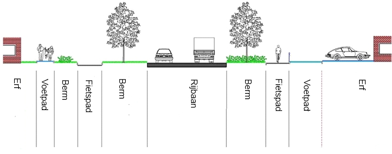

Creative Commons Attribution 4.0 International Public License (CC-BY)
Samenvatting
De Gegevenscatalogus BGT beschrijft de verplichte onderdelen van de Basisregistratie Grootschalige Topografie.
Status van dit document
Deze paragraaf beschrijft de status van dit document ten tijde van publicatie. Het is mogelijk dat er actuelere versies van dit document bestaan. Een lijst van Geonovum publicaties en de laatste gepubliceerde versie van dit document zijn te vinden op https://www.geonovum.nl/geo-standaarden/alle-standaarden.
Dit is de definitieve versie van het informatiemodel. Wijzigingen naar aanleiding van consultaties zijn doorgevoerd.
1. Inleiding
Het Informatiemodel Geografie (IMGeo) beschrijft hoe objectgerichte geografische
informatie moet worden vastgelegd, zodat landelijk uitwisseling van deze
informatie mogelijk is. IMGeo bestaat uit een verplicht deel, te weten de BGT,
en een optioneel deel, te weten de plus- en beheertopografie.
In 2007 is versie 1.0 van IMGeo vastgesteld. Het informatiemodel voor de
Basisregistratie Grootschalige Topografie (BGT) is vervolgens in samenhang met
IMGeo ontwikkeld. In februari 2012 is versie 2.0 van IMGeo vastgesteld, waarin
het informatiemodel BGT in zijn geheel is opgenomen. IMGeo bevat meer detail dan
de BGT.
IMGeo is beschreven in een gegevenscatalogus, die uit twee delen bestaat. Het
document waar u nu in kijkt, is het eerste en verplichte deel van IMGeo:
de Gegevenscatalogus BGT. Deze bevat de afspraken die nodig zijn om
de Basisregistratie Grootschalige Topografie te realiseren. De afspraken in
dit deel zijn verplicht. Het tweede deel is de Gegevenscatalogus IMGeo.
Deze bevat aanvullende afspraken voor plus- en beheertopografie. De
afspraken in het tweede deel zijn optioneel.
Vanaf 2013 is op basis van BGT versie 1.1.1 en IMGeo 2.1.1 de opbouw van de BGT
door bronhouders gestart. Eind 2020 is de laatste fase van de transitie
afgerond. Tijdens de opbouw van de BGT is veel ervaring opgedaan met de
toepassing van de regels van IMGeo.
Daarbij is gebleken dat de BGT door ruimte voor interpretatie in de
afbakeningsregels niet geheel uniform werd opgebouwd.. Ook ontbraken in IMGeo
afspraken over objecten waaraan wel behoefte is vanuit beheer openbare ruimte,
netbeheerders en hulpdiensten.
De huidige versie is op deze aspecten geoptimaliseerd door:
het verduidelijken en aanscherpen van de afbakeningsregels, zodat de BGT
uniformer voor afnemers, en makkelijker maakbaar voor bronhouders wordt.
het uitbreiden met ontbrekende gegevens, zodat sectoren beter kunnen
aansluiten op IMGeo.
Ten grondslag aan deze versie van de BGT catalogus ligt het wijzigingsvoorstel
IMGeo 2.2 versie 8 juni 2020, waarin alle wijzigingen voor de verbetering en
uitbreiding van IMGeo zijn beschreven.
1.1 De Basisregistratie Grootschalige Topografie
De Basisregistratie Grootschalige Topografie (BGT) is een topografisch
objectenbestand dat voor heel Nederland uniform is wat betreft inhoud en
kwaliteit. Dat betekent dat het bestand gebiedsdekkend is en voldoet aan
beschreven kwaliteitsaspecten voor volledigheid, actualiteit en nauwkeurigheid.
De BGT is bedoeld voor gebruik op een schaal van 1:500 tot 1:5.000. Het gaat
over topografische objecten, zoals gebouwen, wegen, spoorwegen, waterlopen,
parken en bossen.
De inhoud van de BGT is afgestemd op de gezamenlijke informatiebehoefte van de
verschillende gebruikers van het bestand. Een belangrijk uitgangspunt hierbij is
dat sprake moet zijn van meervoudig gebruik. Het gaat hierbij zowel om de
bronhouders zoals staat vermeld in artikel 10 van de Wet basisregistratie
grootschalige topografie, als om andere gebruikers en basisregistraties in het
stelsel. Gebruikers kunnen via de Landelijke Voorziening BGT-informatie opvragen
en downloaden.
Een belangrijk onderdeel van het ontwerp van de BGT is de gegevenscatalogus. Bij
het opstellen ervan is zoveel mogelijk rekening gehouden met de actuele
richtlijnen voor de Europese richtlijn INSPIRE, het Basismodel Geo-informatie
(NEN 3610) en de stelselcatalogus voor basisregistraties.
BGT-gebruikers vinden in deze gegevenscatalogus informatie over de BGT over het
doel, het gebruik, de inhoud en kwaliteit.
1.2 Doel
Het doel van de BGT is: de hele overheid gebruikt dezelfde basisset
grootschalige topografie van Nederland.
Met overheid worden alle bestuurslagen (Rijk, provincie, gemeente en
waterschappen) plus de overige bestuursorganen bedoeld. Binnen de overheid is
het gebruik verplicht en gebaseerd op wetgeving. Gebruik van de BGT buiten de
overheid blijft vrijwillig, maar ook daar worden de voorwaarden voor breed
gebruik gecreëerd.
Het doel van de BGT is een verbijzondering van de doelstelling van
basisregistraties in algemene zin: de hele overheid gebruikt dezelfde
basisgegevens. De ratio is dat de overheid dezelfde topografische basiskaart
gebruikt als basis voor geo-gerelateerde thema's. Dit vindt zijn weerslag in de
BGT en door de BGT op te nemen in het stelsel van basisregistraties. Dit creëert
mogelijkheden voor:
Betere dienstverlening aan burgers en bedrijven;
Administratieve lastenverlichting;
Betere samenwerking binnen de overheid;
Kostenbesparing in ketens.
Het accent ligt dus op het brede gebruik van dezelfde informatie. Uiteraard moet
de informatie daarvoor beschikbaar zijn en worden geproduceerd. Het perspectief
van waaruit de BGT wordt ontwikkeld is echter nadrukkelijk het perspectief van
de gebruiker die de BGT-informatie combineert met andere gegevens en daardoor
efficiënter en beter kan werken.
1.3 Gebruik
Voor de overheid betekent het gebruik van de BGT dat er is afgestemd en zo
mogelijk een koppeling bestaat met relevante geo-informatie binnen het stelsel
van basisregistraties, zoals de Basisregistratie Adressen en Gebouwen (BAG). Een
belangrijk uitgangspunt hierbij is dat sprake moet zijn van meervoudig gebruik.
Ook is de BGT, en het bredere informatiemodel geografie (IMGeo), zoveel mogelijk
afgestemd met bestaande informatiemodellen binnen de publieke sector waarin
grootschalige geo-informatie is gemodelleerd, zoals voor water (IMWA) en het
landelijke gebied (IMLG).
Voor iedere gebruiker, publiek en privaat, biedt de BGT de mogelijkheid van
intelligente bevraging met geografische informatiesystemen (GIS), omdat met de
BGT een landsdekkende, uniek identificeerbare basisset objecten ter beschikking
staat.
2. Ontwerpprincipes
Voor de inhoud van de BGT zijn de volgende ontwerpprincipes gehanteerd.
2.1 Topografie
De BGT bestaat uit abstracties van objecten in de werkelijkheid, gelimiteerd tot
de beschreven, fysieke, op enig moment in de werkelijkheid voorkomende,
zichtbare topografische objecten met een duidelijk meervoudig gebruik,
samengevat onder de term basistopografie. De BGT neemt deze op als authentieke,
wettelijk vastgestelde objecten. Deze objecten vormen het verplichte deel van
IMGeo 2.2.
2.2 Schaalbereik
De BGT beschrijft de geometrie van objecten voor een afbeeldingbereik van schaal
1:500 tot 1: 5.000.
2.3 Fysieke objecten
De BGT bevat fysieke topografische objecten. Uitzonderingen hierop zijn het
functioneel gebied Kering (zie paragraaf 3.4) en de (kunstmatig) gekozen
vlakobjectbegrenzingen bij wegdelen, waterdelen en terreindelen.
Overzicht BGT-objecten.
2.4 Dekking
De BGT wordt landsdekkend beheerd voor het grondgebied van Nederland binnen de
gemeentegrenzen. Daartoe behoren ook industriële complexen, zoals Schiphol, de
Hoogovens en Europoort. Dit geldt ook voor alle particuliere terreinen waar deze
informatie voorziet in een betere of zelfs noodzakelijke, wettelijk geregelde
dienstverlening door bronhouders en gebruikers. Denk daarbij bijv. aan de inzet
van hulpdiensten maar ook de dienstverlening door netbeheerders dat deels een
wettelijke taak is.
Niet tot de inhoud van de BGT behoort het grondgebied van Nederland in de
Noordzee (Continentaal Plat) en de overzeese gebiedsdelen (Antillen).
Ten behoeve van beheer door bronhouders kunnen objecten die gedeeltelijk buiten
de landsgrens liggen in hun geheel worden opgenomen in de BGT. Wanneer
beheerobjecten geheel buiten de landsgrens liggen kunnen deze worden opgenomen
in IMGeo.
2.5 IMGeo-objecten in de BGT
Objecten, die aan elkaar grenzen, met voor de BGT of IMGeo gelijke eigenschappen
kunnen als afzonderlijke objecten in de BGT worden geregistreerd.
De BGT stelt geen maximale limieten aan de omvang van oppervlakten maar legt de
verantwoordelijkheid hiervan bij de bronhouder.
2.6 Modellering
De BGT hanteert het Basismodel Geo-informatie (NEN 3610:2011) voor de
modellering. NEN 3610:2011 conformeert zich aan de ISO 19100 standaarden voor
geo-informatie. Deze gelden daarom ook voor de BGT.
De BGT is een tweedimensionale objectenverzameling. Om de stap naar 3D op een
later moment te kunnen maken, is het BGT-model gebaseerd op CityGML 2.0. CityGML
is de internationale standaard voor grootschalige topografie in 3D van het
Open Geospatial Consortium (OGC).
2.7 Geen inhoud van de BGT: macro-objecten
Het informatiemodel BGT is bedoeld voor grootschalige toepassing (zie paragraaf
2.2). Het model bevat daarom bijvoorbeeld geen klasse Weg, maar alleen een
klasse Wegdeel; geen Water maar Waterdeel, geen Terrein maar Begroeid- en
Onbegroeid Terreindeel, geen Kunstwerk maar Kunstwerkdeel. Een object Weg,
bijvoorbeeld de rijksweg A1, zou veel te omvangrijk zijn voor gebruik in een
grootschalige toepassing. Om die reden wordt een weg opgeknipt in wegdelen, die
een veel kleinere omvang hebben.
Gebruikers kunnen echter voor het eigen werkproces behoefte hebben aan een
clustering van BGT-objecten en/of delen van objecten, die voor een specifieke
situatie als één object moet fungeren: een macro- of superobject. Voorbeelden
van macro-objecten zijn:
gebieden met een agrarische, natuur- of recreatiebestemming of een
combinatie hiervan, bijvoorbeeld de Veluwe;
rivieren, bijvoorbeeld de Rijn, Maas en IJssel;
rijkswegen, bijvoorbeeld de A1 en A12.
Ook voor een minder groot oppervlak kunnen geclusterde BGT-objecten en/of delen
van objecten als macro-object gewenst zijn. Denk bijvoorbeeld aan industrie- en
rangeerterreinen en complexen, zoals Schiphol.
Tot slot kunnen macro-objecten voor nog kleinere oppervlakten gewenst zijn,
bijvoorbeeld een sluiscomplex. Voor gebruikers (beheerders) behoren tot een
sluiscomplex onder meer panden, muren, kademuren, overbruggingen en sluisdeuren.
Alleen de sluisdeuren komen expliciet in de BGT als kunstwerkdeel voor. De
andere objecten en -typen worden in de BGT opgenomen onder andere klassen (Pand,
Scheiding en Overbruggingsdeel).
Macro-objecten zijn geen inhoud van de BGT; in het eigen beheersysteem kan men
indien gewenst macro-objecten definiëren, die een clustering van BGT objecten
en/of delen van BGT-objecten bevatten. In het optionele deel van IMGeo kunnen
deze worden uitgewisseld als Functioneel Gebied.
3. Algemene principes
Voor de inhoud van de BGT zijn de volgende algemene principes gehanteerd.
3.1 Bronhouders
De BGT beschrijft objecten die worden aangeleverd door bronhouders. Uitgangspunt
binnen de BGT is dat elk BGT-object aan één bronhouder is toegewezen en door hem
wordt aangeleverd. Een object valt al tijd geheel binnen het gebied van één
bronhouder, die over dit object het beheer voert. De grenzen van de objecten
zijn een gedeelde verantwoordelijkheid van bronhouders.
Er is gekozen voor het decentraal bronhouderschap. Dit houdt in dat iedere
bronhouder op zijn eigen wijze de BGT-objecten mag bijhouden die hem zijn
toegewezen.
Bronhoudergrenzen vallen samen met objectbegrenzingen en ‘bewegen mee’ als er
mutaties in de objectbegrenzingen optreden.
3.2 Talud
Taluds zijn BGT-inhoud als het hoogteverschil minimaal 1 meter is en de
steilheid 1:4 of meer bedraagt. Het kenmerk voor het voorkomen van een talud is
een attribuut bij weg-, ondersteunend weg- en terreindelen. Als er meer dan een
objecttype op een talud ligt, bevat alleen het hoogst gelegen object een
kruinlijngeometrie. Een object dat op een talud ligt is altijd een afzonderlijk
begrensd object ten opzichte van een aangrenzend identiek object dat niet op een
talud ligt. De coördinaten van de kruinlijn zijn identiek aan de coördinaten van
de objectbegrenzing die samenvalt met de kruinlijn.
3.3 Functioneel gebied
De BGT kent één functioneel gebied, de Kering. Hierdoor zijn
(hoofd)waterkeringen herkenbaar. Dit object wordt uitsluitend toegekend door
een waterschap en in voorkomende gevallen door Rijkswaterstaat, die ook als
bronhouder voor dit object fungeren. De begrenzing van functionele gebieden
hoeft niet samen te vallen met de begrenzing van objecten. Functionele gebieden
bevatten geen plaatsbepalingspunten.
3.4 Coördinaat-referentiesysteem
Het toegepaste coördinaatsysteem voor de BGT is dat van het stelsel van de
Rijksdriehoeksmeting (RD-stelsel). De coördinaatgetallen zijn daarbij op
millimeternauwkeurigheid met als eenheid meters. Het coördinaatgetal heeft
maximaal drie cijfers achter de komma. Zo nodig wordt daarvoor afgerond,
zodanig dat als het vierde cijfer achter de komma de waarde 1 t/m 4 bedraagt,
het derde cijfer achter de komma niet wijzigt en als het vierde cijfer achter de
komma de waarde 5 t/m 9 bedraagt, het derde cijfer achter de komma met één wordt
verhoogd, met mogelijk ook implicaties voor de voorliggende cijfers, waarbij
dezelfde regel geldt.
Het RD-stelsel voldoet aan de eisen van de Europese richtlijn INSPIRE. Deze
stelt dat binnen de Europese continentale aardschol, waartoe ook Nederland en
het Nederlandse deel van de Noordzee behoort, geldt dat coördinaten herleidbaar
moeten zijn tot het European Terrestrial Reference System 1989 (ETRS89) voor de
horizontale component.
3.5 Geometrietypen
Het BGT-informatiemodel beschrijft het geometrietype als een associatie van een
object met een geometrie-object. Daarbij maakt de BGT onderscheid in vlak-,
lijn- en puntgeometrie. Tot de BGT-inhoud behoren de volgende objecten.
Hoofdgroep / subgroep
BGT classificatie
Geometrie
Transport
Wegdeel
Functie:
kruinlijn: lijn
OV-baan
Vlak
op talud: ja/nee
overweg
Vlak
spoorbaan
Vlak
baan voor vliegverkeer
Vlak
rijbaan autosnelweg
Vlak
rijbaan autoweg
Vlak
rijbaan regionale weg
Vlak
rijbaan lokale weg
Vlak
fietspad
Vlak
voetpad
Vlak
voetpad op trap
Vlak
ruiterpad
Vlak
parkeervlak
Vlak
voetgangersgebied
Vlak
inrit
Vlak
woonerf
Vlak
Fysiek voorkomen:
gesloten verharding
Vlak
open verharding
Vlak
half verhard
Vlak
onverhard
Vlak
Ondersteunend wegdeel
Functie:
kruinlijn: lijn
verkeerseiland
Vlak
op talud: ja/nee
berm
Vlak
Fysiek voorkomen:
gesloten verharding
Vlak
open verharding
Vlak
half verhard
Vlak
onverhard
Vlak
groenvoorziening
Vlak
Spoor
Functie
trein
Lijn
sneltram
Lijn
tram
Lijn
Terrein
Onbegroeid terreindeel
Fysiek voorkomen:
kruinlijn: lijn
erf
Vlak
op talud: ja/nee
gesloten verharding
Vlak
open verharding
Vlak
half verhard
Vlak
onverhard
Vlak
zand
Vlak
Begroeid terreindeel
Fysiek voorkomen:
kruinlijn: lijn
loofbos
Vlak
op talud: ja/nee
gemengd bos
Vlak
naaldbos
Vlak
heide
Vlak
struiken
Vlak
houtwal
Vlak
duin
Vlak
moeras
Vlak
rietland
Vlak
kwelder
Vlak
fruitteelt
Vlak
boomteelt
Vlak
bouwland
Vlak
grasland agrarisch
Vlak
grasland overig
Vlak
groenvoorziening
Vlak
Water
Waterdeel
Type
zee
Vlak
waterloop
Vlak
watervlakte
Vlak
greppel, droge sloot
Vlak
Ondersteunend waterdeel
Type
oever, slootkant
Vlak
slik
Vlak
Bouwwerk
Pand
Grondvlaksituatie van BAG-pand
Multivlak
Overig bouwwerk
Type
overkapping
Multivlak
open loods
Vlak
opslagtank
Vlak
bezinkbak
Vlak
windturbine
Vlak
lage trafo
Vlak
bassin
Vlak
Kunstwerk
Overbruggingsdeel
Overbruggingsdeel
Vlak
Tunneldeel
Tunneldeel
Vlak
Kunstwerkdeel
Type
hoogspanningsmast
Multipunt of multivlak
gemaal
Vlak
perron
Vlak
sluis
Vlak
strekdam
Vlak
steiger
Vlak
stuw
Lijn of vlak
Scheiding
Type
muur
Lijn of vlak
kademuur
Lijn of vlak
damwand
Lijn
geluidsscherm
Lijn
walbescherming
Lijn
hek
Lijn
Functioneel Gebied
kering
Vlak
N.B. Functionele gebieden doen, in tegenstelling tot alle andere
BGT-vlakobjecten, niet mee in de topologische structuur. Zij liggen als het ware
als een overlay over andere BGT-objecten. Bij de kering kan het bijvoorbeeld
gaan om dijken die zijn samengesteld uit terreindelen en wegdelen. De begrenzing
van functionele gebieden hoeft niet samen te vallen met de begrenzing van
objecten.
Voor de beschrijving van geometrieën geldt het ISO 19107 Spatial Schema. Voor de
uitwisseling wordt gebruik gemaakt van Geography Markup Language (GML) 3.1.1. In
de BGT zijn de geometrieën uit GML 3.1.1 simple features profile v1.0
toegestaan, plus cirkelbogen (GM_Arc).
De geometrie-objecten worden in het informatiemodel met hun ISO 19107 naam,
zoals GM_Surface, aangeduid. Bij objecten die een lijn- of een vlakgeometrie
kunnen hebben, is een associatie met GM_Object gelegd. Een GM_Object mag een ISO
punt, lijn of vlak zijn. In de praktijk betekent dit voor BGT objecten dat lijn-
of vlakgeometrie is toegestaan. Bij hetzelfde objecttype kan in het optionele
IMGeo-deel mogelijk wel puntgeometrie voorkomen.
Geometrietype
ISO aanduiding
Vlak
GM_Surface
Lijn
GM_Curve
Punt
GM_Point
Multivlak
GM_MultiSurface
Multipunt
GM_MultiPoint
Geometrie algemeen
GM_Object
Zowel lijn- als vlakvormige objecten kunnen bestaan uit een boogvorm. Voor de
representatie van boogvormen zijn er twee mogelijkheden in de BGT toegestaan,
namelijk benadering van de boog met:
lineaire lijnsegmenten, de zogenaamde gestrookte boog;
beschrijving van de boog met drie punten (GM_Arc).
Voor het weergeven van cirkels kan men gebruik maken van twee bogen. Gebruik van
GM_Circle is niet toegestaan.
3.6 Topologie
De vlakobjecten in de BGT op maaiveldniveau (niveau 0) partitioneren de ruimte.
Dat betekent dat:
elk van deze objecten topologisch gestructureerd moet zijn;
deze objecten naadloos op elkaar aan moeten sluiten, zodat er op
maaiveldniveau geen gaten voorkomen;
deze objecten elkaar niet mogen overlappen.
Op maaiveldniveau is het grondgebied van Nederland volledig gebiedsdekkend. Het
totaal oppervlak van alle objecten op maaiveldniveau is gelijk aan het
dekkingsgebied (zie paragraaf 2.4).
Bij niveauverschillen kunnen objecten elkaar wel overlappen. Objecten op een
niveau anders dan het maaiveld doen echter niet mee in de topologische
structuur. Dit houdt onder meer in dat wanneer men dit object verwijdert er
minimaal één ander object op niveau 0 overblijft.
Elk objecttype bevat één geometrie op één niveau. Dit betekent bijvoorbeeld dat
een weg zich opsplitst in meerdere wegdelen met eigen identificaties als deze
over een brug loopt, ook al zijn de rest van de kenmerken gelijk.
3.7 Niveauaanduidingen per object
De BGT is een tweedimensionale objectverzameling. Daarom is het noodzakelijk om
de reltieve hoogteligging van objecten ten opzichte van elkaar vast te leggen.
Hiervoor wordt gebruik gemaakt van niveaus die aangeven of een object zich op
maaiveldniveau (niveau 0) bevindt of op een onder- of bovenliggend niveau.
Het niveau wordt vastgelegd met het attribuut ‘relatieveHoogteligging’. Dit
kan elk willekeurig geheel getal (integer) aannemen. Het niveaugetal geeft
geen informatie over de absolute hoogte van een object.
Open, bovengronds water heeft altijd niveau 0. Objecten op een bovenliggend
niveau, bijvoorbeeld een overbrugging over water, hebben een hoger niveaugetal.
Objecten op een onderliggend niveau, bijvoorbeeld een tunnel, hebben een lager
niveaugetal.
De BGT stelt de volgende eisen aan de niveauwaarden:
Het is alleen toegestaan om gehele getallen (bijvoorbeeld -1, 0, 2) als
niveauwaarde toe te kennen, dus geen ‘halve niveaus’ (bijvoorbeeld niveau
1½);
Het is mogelijk dat de niveauwaarden elkaar niet opvolgen, dus dat er
waarden worden overgeslagen (bijvoorbeeld -2, 0, 1, 3). Alleen de volgorde
van de niveauwaarden is van belang;
De niveauwaarden worden toegekend aan objecten, niet aan etages. Een object,
dat uit meerdere etages bestaat, krijgt in principe één niveau toegekend.
Open, bovengrondse waterdelen hebben altijd het niveau 0.
3.8 Hiërarchie in objecten en domeinwaarden
BGT-objecten bezitten attributen die kenmerken van het object beschrijven. Welke
waarde(n) de attributen kunnen of mogen hebben is vastgelegd in domeinwaarden.
Voor drie zaken is het van belang om hiërarchie te hanteren bij BGT-objecten,
domeinen en domeinwaarden, te weten:
afbakenen van objecten;
toekennen van domeinwaarden;
visualiseren.
Voor de eerste twee punten geldt dat het object met de beste idealisatiewaarde
(zie paragraaf 4.2) voorrang heeft boven een object met een minder goede waarde.
Als objecten dezelfde idealisatiewaarde hebben, dan geldt de volgorde van de
beschrijving van de objecten in hoofdstuk 8 en de volgorde van de domeinwaarden
in hoofdstuk 9. Een eerder beschreven object of domeinwaarde heeft dan voorrang
boven het daarna vermelde object of domeinwaarde.
Voor het derde punt, de visualisatie van de BGT, gelden afwijkende regels. Deze
regels zijn opgenomen in hoofdstuk 5 van het document Visualisatieregels BGT en
IMGeo.
3.9 Identificatie en historie
3.9.1 Identificatie
De BGT-objectidentificatie (object-ID) hanteert de richtlijnen van NEN3610:2011.
Aan elk object wordt een uniek identificatienummer toegekend, dat uit twee delen
bestaat: een namespace en een identificatiecode. Zolang het object bestaat, mag
dit ID niet veranderen. Vanwege de samenhang tussen de BGT en IMGeo wordt één
notatiewijze voor het object-ID voorgeschreven.
De BGT hanteert voor het eerste deel, de namespace, NL.IMGeo. Het eerste deel is
daarbij landcode, gevolgd door een punt. Het tweede deel is de code voor het
sectormodel. Het derde deel bestaat uit vijf alfanumerieke posities, die zijn
toegekend aan de bronhouder, die het object voorziet van een ID. Voor de
duidelijkheid: hier moet de code worden ingevuld van de bronhouder die de
werkzaamheden uitvoert. In het geval dat een inwinnende instantie, geen
bronhouder zijnde betreft, wordt hier de code ingevuld van de verantwoordelijke
bronhouder. Het vierde deel moet het object per bronhouder uniek identificeren.
Hiervoor dient gebruik gemaakt te worden van een UUID. Dit is een getal van 32
cijfers (plus eventueel vier streepjes), opgedeeld in een opeenvolging van
hexadecimale noteringen (0-9 en a-f).
Op deze wijze ziet een BGT-ID met een willekeurige bronhouder en UUID er dan als
volgt uit.
Namespace
NL.IMGeo
LokaalID
G1023.b2ad189a-8c46-49f2-a192-557ba07c49a2
De BGT-ID wordt bepaald bij het ontstaan van het object en blijft behouden als
het object wordt overgedragen aan een andere bronhouder.
3.9.2 BAG-identificatie
Objecten uit de BAG hebben in de BAG-registratie een unieke identificatiecode.
Voor deze objecten neemt de BGT de identificatiecode op als attribuut
‘identificatieBAG’.
3.9.3 Gebeurtenissen
In het stelsel van basisregistraties gelden gedefinieerde gebeurtenissen als
aanleiding voor een wijziging. Voor de BGT zijn dat er twee:
een wijziging van het object in de werkelijkheid. Dit leidt tot nieuwe
versies van één of meer bestaande objecten of tot één of meer nieuwe
objecten;
een correctie van één of meer eigenschappen, inclusief de geometrie, van het
object. Dit leidt tot een nieuwe versie van hetzelfde object.
3.9.4 Levensduur en historie
In het stelsel van basisregistraties geldt bij het modelleren van historie een
onderscheid in materiële historie en formele historie. Materiële historie
beschrijft de veranderingen van een object in de werkelijkheid. Formele historie
beschrijft de historie van veranderingen van een object in de registratie.
Analoog hieraan beschrijft de formele levensduur het initiële ontstaan en
vervallen van een object in de registratie.
De BGT legt de formele levensduur en formele historie vast. Hierbij is een
bandbreedte van kracht voor de nauwkeurigheid van beide. Deze bandbreedte is een
gevolg van het feit, dat niet alle BGT-objecten wijzigen op basis van
vergunningverlening. In het algemeen geldt dit voor terrein- en waterdelen.
Meestal moeten wijzigingen van eigenschappen van een object in de werkelijkheid
eerst worden geconstateerd en gemeld, voordat dit in de BGT wordt verwerkt.
De BGT registreert niet de materiële historie. Een benadering van het ontstaan
ervan is de inwinningsdatum van het plaatsbepalingspunt (zie paragraaf 3.12.1).
Levensduur De formele levensduur wordt per object vastgelegd met de
objectBegintijd en objectEindtijd, met als onderdeel daarvan de datum, die is
bepaald door de bronhouder. Naast deze objectBegin en –Eindtijd vermeldt de
Landelijke Voorziening ook het tijdstip waarop de betreffende processtap is
geëffectueerd in de Landelijke Voorziening voor een object. Dit heet de
LV-publicatiedatum. Dat is het moment waarop voor gebruikers de objectinformatie
beschikbaar is.
Historie Voor de formele historie (versiehistorie) van het object hanteert
de BGT het tijdstipRegistratie en eindRegistratie.
De BGT hanteert de volgende regels voor object- en versiehistorie (zie ook
paragraaf 4.5):
Als een nieuw object ontstaat bij een bronhouder wordt een nieuw object met
object-ID gecreëerd en ontstaat een versiehistorie. Het object krijgt bij
ontstaan van de bronhouder een objectBeginTijd en een tijdstipRegistratie
met beide dezelfde datum.
Als het nieuwe object wordt geregistreerd in de Landelijke Voorziening
krijgt het object ook een LV-publicatiedatum.
Als de geometrie van een object wijzigt, treedt altijd één van onderstaande
twee veranderingen op, met de daarbij geldende regel:
Uitsluitend wijziging van geometrie: het object-ID blijft behouden, er
ontstaat een nieuwe versie; de huidige versie krijgt van de bronhouder
een eindRegistratie. De bronhouder maakt een nieuwe objectversie aan.
Het object behoudt dezelfde objectBeginTijd en krijgt een nieuw
tijdstipRegistratie, waarbij tijdstipRegistratie gelijk is aan de
eindRegistratie van de vorige versie. Bij opname van de nieuwe versie in
de Landelijke Voorziening krijgt het object ook een nieuwe
LV-publicatiedatum.
Als een situatie wijzigt door het opknippen van een object of het
samenvoegen van (delen van) een object met (delen) van één of meer
andere objecten, ontstaan nieuwe objecten.
Uitsluitend wijzigingen in geometrie: dezelfde ID’s, nieuwe versies
Wijziging door samenvoegen of splitsen: nieuwe, gewijzigde en vervallen
objecten
Als een object niet meer in de werkelijkheid bestaat, vervalt het object.
Het object-ID blijft wel geregistreerd. Het object krijgt van de bronhouder
een objectEindTijd en een eindRegistratie die gelijk is aan de
objectEindTijd.
Door het herstellen van een fout van één of meer attributen, inclusief een deel
of de gehele geometrie, ontstaat een nieuwe versie van hetzelfde object.
In de BGT geldt dat elk object op enig moment uitsluitend met één object-ID en
één versie voorkomt in de Landelijke Voorziening.
3.10 Toekomstige topografie
Toekomstige topografie is geen inhoud voor de BGT. Het kan onderdeel zijn van
IMGeo.
3.11 Meetgegevens
De grenzen van de objecten zijn een gedeelde verantwoordelijkheid van
bronhouders (zie paragraaf 3.1). Ook moet de BGT landsdekkend zijn, dus zonder
overlap of gaten (zie paragraaf 3.7). Tussen de bronhouders is daarom afstemming
nodig over de kwaliteit in de objectafbakeningen op de bronhoudergrenzen. Ook
moet de kwaliteit van meten expliciet bekend zijn.
Wat betreft de kwaliteit van meten is niet voldoende dat er één
kwaliteitsbeschrijving van een BGT-object is. Daar waar de kwaliteit van de
begrenzing van een BGT-object niet overal hetzelfde is, moet dit onderscheid
bekend zijn. Dit speelt met name bij panden, muren en andere topografie die
netbeheerders gebruiken voor het vastleggen van de locatie van hun netwerken.
Hetzelfde geldt voor de waterschappen bij het definiëren van objectbegrenzingen
van de waterdelen.
Ook de kwaliteit van puntgegevens en de bijbehorende kwaliteitsgegevens moeten
expliciet voor iedereen bekend zijn. In de gegevenscatalogus worden daarom van
goed idealiseerbare objecten, zie daarvoor hoofdstuk 4 Datakwalieit,
puntgegevens en de daarbij horende kwaliteit vastgelegd in de vorm van
plaatsbepalingspunten. Voor bronhouders geldt een verplicht gebruik van deze
punten bij het vormen van aangrenzende objecten.
3.11.1 Plaatsbepalingspunt
Plaatsbepalingspunten (PBP’s) zijn die punten die in coördinaten bekend zijn en
die gebruikt zijn bij en onderdeel uitmaken van de begrenzing van BGT-objecten.
Elk plaatsbepalingspunt heeft een unieke identificatie, maar de relatie tussen
BGT-objecten en plaatsbepalingspunten bestaat uit de overeenkomstige
coördinatenparen. Er vindt geen administratieve koppeling plaats op basis van
het ID.
Alleen voor objecten die goed idealiseerbaar zijn in het terrein worden voor de
coördinaten die zijn ingemeten middels inwinningsmethoden fotogrammetrisch,
terrestrisch, laserscanning of panoramabeelden, plaatsbepalingspunten opgenomen.
De goed idealiseerbare objecten zijn de objecten met een positionele
nauwkeurigheid van 30 centimeter, zoals opgenomen in de tabel in hoofdstuk 4
Datakwaliteit.
Van elke plaatsbepalingspunt is de nauwkeurigheid, de inwinningsdatum, de
inwinnende instantie die het heeft bepaald en de inwinningsmethode bekend. De
inwinningsdatum is gelijk een benadering voor het ontstaan van materiële
historie, een gegeven binnen het stelsel van basisregistraties.
De ligging van elk BGT-object is gedefinieerd door geometrie. Deze geometrie is
expliciet gekoppeld aan een BGT-object in de vorm van een attribuut ‘geometrie’.
Deze geometrie moet overeenkomen met de geometrie van plaatsbepalingspunten van
de goed idealiseerbare objecten, die deel uitmaken van de verzameling van de
meetkundige afbakening.
Op maaiveldniveau vormen de verbindingen tussen de coördinaten altijd een grens
tussen twee aangrenzende objecten in de BGT. Uitzonderingen op deze regel zijn
de punten die de geometrie van een spoor en in specifieke gevallen van een
lijnvormige scheiding definiëren. De specifieke gevallen treden alleen dan op
als een lijnvormige scheiding in zijn geheel binnen een vlakobject ligt en met
maximaal een punt raakt aan de begrenzing van dat vlakobject.
In het geval dat niet-gestrookte bogen voorkomen in de vlakgeometrie van
BGT-objecten worden de drie punten meegenomen die zijn gebruikt bij het
vastleggen van de boog.
3.11.2 Voorbeelden
In onderstaande figuur wordt het terreindeel gevormd door de coördinaten 1 t/m
10 en het wegdeel door de coördinaten 6 t/m 16.
Voor het wegdeel wordt voor elk coördinaat ingewonnen met fotogrammetrie,
terrestrisch, laserscanning of panoramabeelden een plaatsbepalingspunt
opgenomen.
Voor het terreindeel worden voor de coördinaten 1 t/m 5 geen eigen
plaatsbepalingspunten opgenomen, voor de overige coördinaten worden de
plaatsbepalingspunten verkregen via het wegdeel.
BGT-objecten en plaatsbepalingspunten.
4. Datakwaliteit
De BGT kent een normkwaliteit en een gerealiseerde kwaliteit. De normkwaliteit
geldt in principe generiek en per object. De gerealiseerde kwaliteit geldt
uitsluitend per plaatsbepalingspunt.
De normkwaliteit wordt beschreven met:
Actualiteit;
Positionele nauwkeurigheid;
Volledigheid;
Logische consistentie;
Tijd, onderverdeeld in:
Nauwkeurigheid;
Consistentie;
Geldigheid;
Thematische nauwkeurigheid (juistheid).
De vermelde waarden voor kwaliteit zijn minimumwaarden. Dat wil zeggen dat de
aspecten van de BGT daar minimaal aan moeten voldoen. Betere waarden zijn altijd
toegestaan.
4.1 Actualiteit
Actualiteit is de mate waarin de gegevens binnen een gedefinieerd tijdsinterval
overeenstemmen met de werkelijke situatie.
4.1.1 Relatie actualiteit en bijhoudingsfrequentie
Om een vastgestelde actualiteit van een bestand als de BGT te kunnen garanderen
moet de inwinning en het verwerkingsproces daarvan met een hogere frequentie
plaatsvinden. Neem als voorbeeld dat een object een dag na een terreinopname
wijzigt. Als er pas na zes maanden een nieuwe inwinning plaatsvindt, zou de
actualiteit al zijn overschreden, terwijl het verwerkingsproces van de
inwinning nog moet plaatsvinden. Een ander voorbeeld, luchtfoto’s. Deze worden
met een bijhoudingsfrequentie van 12 maanden gevlogen. Daarna volgt de
verwerking van de luchtfoto’s en de aanpassing van de BGT op basis van de
luchtfoto’s. De verwerkingsperiode is zes maanden. Dit levert dan een
actualiteit van 18 maanden op.
4.1.2 Positionele nauwkeurigheid
De BGT stelt eisen aan de positionele nauwkeurigheid, waarmee een object wordt
ingewonnen en vastgelegd. Onder positionele nauwkeurigheid verstaat men de mate
waarin de opgeslagen coördinaten overeenkomen met de waarden in de werkelijkheid
of de geaccepteerde afwijking. De positionele nauwkeurigheid in de BGT is de
combinatie van precisie en betrouwbaarheid, ook wel geometrische nauwkeurigheid
genoemd.
De positionele nauwkeurigheid van een object wordt beschreven op het niveau van
het objecttype. Hiermee wordt aan elk object binnen dat objecttype een
nauwkeurigheidseis gesteld. De BGT hanteert voor het beschrijven van de
positionele nauwkeurigheid de relatieve precisie. Een uitgebreide theoretische
beschrijving hiervan staat in het Handboek Technische Werkzaamheden van het
Kadaster uit 1996 (HTW 1996). Bij de precisiebeschrijving wordt
onderscheid gemaakt tussen de relatieve precisie van coördinaten ten gevolge van
de ontstaanswijze (het meet-en verwerkingsproces) en de idealisatie. Toepassing
van het meet- en verwerkingsproces levert de vereiste minimumwaarde op.
Relatieve precisie geldt alleen voor nabijgelegen punten.
Hieronder staan de waarden voor de minimale toegestane kwaliteit voor de
positionele nauwkeurigheid van 30 en 60 cm. Het zijn afrondingen van de in de
HTW 1996 vermelde waarden voor de lengte van de halve lange as van de relatieve
standaardellips tussen twee punten in.
Objecten met een hoge positionele nauwkeurigheid: 20 cm x √2 = 28,3 cm,
afgerond: 30 cm;
Objecten met een lage positionele nauwkeurigheid: 40 cm x √2 = 56,6 cm,
afgerond: 60 cm.
De punten in het veld dienen te zijn ingemeten en in het bestand te zijn
verwerkt volgens de regels, zoals beschreven in de HTW van 1996, inclusief het
supplement voor detailmeten met GPS.
De tabel hieronder vermeldt de minimale waarden van de toegestane kwaliteit voor
de positionele nauwkeurigheid per objecttype. In de laatste kolom staan de
waarden voor idealisatie per objecttype. Een bronhouder is volledig vrij om voor
zijn eigen objecten hogere nauwkeurigheidseisen te hanteren dan voor de BGT zijn
vereist.
Omdat de BGT bestaat uit een verzameling objecten wordt in de tabel per object
een generieke waarde voor de maximaal toegestane afwijking vermeld tussen
nabijgelegen punten met dezelfde idealisatiewaarden en van hetzelfde object.
BGT-object
Type
Actualiteit van object in maanden
Positionele nauwkeurigheid tussen punten van object in cm
Idealisatie per punt van object in cm
Wegdeel
6
30
2 – 5
Onderst. wegdeel
18
30
5 - 10
Spoor
18
30
2 – 5
Onbegr. terreindeel
18
60
≥ 10
Begroeid terreindeel
18
60
≥ 10
Waterdeel
18
60
≥ 10
Ondersteunend waterdeel
18
60
≥ 10
Pand
6
30
0 – 2
Overig bouwwerk
Bassin
18
60
≥ 10
Bezinkbak
18
30
2 – 5
Lage trafo
18
30
0 – 2
Open loods
18
30
0 – 2
Opslagtank
18
30
2 – 5
Overkapping
18
30
0 - 2
Overbruggingsdeel
6
30
0 – 2
Tunneldeel
6
30
0 – 2
Kunstwerkdeel
18
30
0 – 2
Scheiding
Muur
18
30
0 – 2
Kademuur
18
30
0 – 2
Geluidsscherm
18
30
5 – 10
Damwand
18
30
5 - 10
Walbescherming
18
60
≥ 10
Hek
18
60
≥ 10
Tabel 1 Per objecttype generieke waarden voor actualiteit, positionele
nauwkeurigheid en idealisatie
Precisie De mate waarin een meet- en verwerkingsproces bij herhaling
dezelfde resultaten geeft noemt men precisie. Als een hoge precisie wordt
gehaald, betekent het dat de mogelijke fout een kleine waarde heeft. Precisie is
het resultaat van inwinning en verwerking. Dat betekent dat een hoge precisie
bij de inwinning vaak ‘verslechtert’ door inpassing in een bestaand bestand. Zo
zal een terrestrische inwinning die is aangesloten op een fotogrammetrisch
ingewonnen bestand, de precisie verkrijgen die geldt voor het bestaande,
fotogrammetrisch ingewonnen bestand. Mede om deze reden worden vaak grotere
mutaties (uitbreidingsgebieden), na controle op de betrouwbaarheid van de
meting door analyse van een eerste fase vereffening, geplaatst binnen het
bestaande bestand en niet daarop ingepast. Dit is ook bekend onder de term
“dumpen”.
Betrouwbaarheid De mate waarin de ligging van een punt is gecontroleerd
noemt men betrouwbaarheid. De ligging van een punt is weliswaar door één meting
bepaald, maar nog niet gecontroleerd. Een tweede, onafhankelijke meting
controleert de eerste, waardoor men meer zekerheid heeft over de ligging van het
punt. De BGT vermeldt geen waarde voor betrouwbaarheid.
Idealisatie Een aspect dat bij het inmeten (herkennen) van punten in het
veld een belangrijke rol speelt, is idealisatie. De idealisatieprecisie is de
precisie waarmee in het terrein een punt kan worden aangewezen, het idealiseren
van een punt. Goede idealiseerbare punten zijn bijvoorbeeld hoeken van panden,
slecht idealiseerbaar bijvoorbeeld de kant van een sloot. De idealisatieprecisie
is onafhankelijk van het gevolgde meet- en verwerkingsproces en is een absoluut
precisiekenmerk van een punt. De waarden voor idealisatie gelden daarom per punt
per objecttype en staan vermeld in de overzichttabel.
4.1.2.1 Relatie Nauwkeurigheid – precisie en plaatsbepalingspunten
De hierboven opgenomen tabel vermeldt een generiek waarde voor de minimale
toegestane positionele nauwkeurigheid (de relatieve precisie) tussen nabij
gelegen punten van één object met dezelfde idealisatie. In de praktijk zal één
BGT-object meestal bestaan uit punten met verschillende waarden voor precisie én
idealisatie. Als men tussen deze punten of tussen nabijgelegen punten van
verschillende objecten wil toetsen, moet men eerst de maximaal toegestane
afwijking berekenen als resultaat van de gerealiseerde precisie van de
betreffende plaatsbepalingspunten én de idealisatieprecisie die geldt voor de
objecten waar deze punten deel van uit maken. Het proces daarvan is uitgebreid
beschreven in de HTW 1996.
Als men punten over grotere afstand met elkaar wil vergelijken, moet men
rekening houden met de fouteninvloed van het gehanteerde referentiesysteem. In
Nederland is dat het stelsel van de Rijksdriehoeksmeting (RD; zie paragraaf
3.5). Toepassing van geschikte positiebepaling met behulp van satellieten (GPS,
Glonass) levert als eerste resultaat ruimtelijke coördinaten op in ETRS89. Vaak
wordt dit gezien als een ‘absoluut’ coördinaatsysteem. Om daaruit RD-coördinaten
te verkrijgen moet men in Nederland altijd een transformatie uitvoeren met de
geldige versie van RDNAPTRANS[^1].
Onder volledigheid verstaat men de mate waarin BGT-objecten die in werkelijkheid
voorkomen in het bestand zijn opgenomen. Voor alle vlakobjecten op
maaiveldniveau in de BGT geldt per bronhouder een volledigheidseis van 100%.
Voor alle overige objecten geldt een volledigheidseis van 98%. Het percentage
heeft betrekking op het aantal objecten per bronhouder. Daarnaast geldt dat op
maaiveldniveau de objecten samen 100% dekkend zijn (zie paragraaf 2.4 en 3.7).
4.1.4 Logische consistentie
Als de BGT volledig is gevuld, is het op maaiveldniveau (niveau 0) voor
Nederland gebiedsdekkend. Regels voor de logische consistentie zijn al
beschreven in paragraaf 3.7.
4.1.5 Tijd
De BGT hanteert de ISO 8601 norm voor het beschrijven van tijdsaspecten. De BGT
registreert de volgende tijden:
een objectBeginTijd en een objectEindTijd. Dat zijn attributen die de datum
beschrijven waarop het object wordt geregistreerd, respectievelijk ongeldig
wordt. Regels wanneer een object zo verandert dat er sprake is van een nieuw
BGT object of een nieuwe versie van hetzelfde object, staan beschreven in
paragraaf 3.10.4.
tijdstipRegistratie en eindRegistratie: deze attributen beschrijven het
tijdstip waarop een versie van het object ontstaat, respectievelijk ongeldig
wordt. Als een mutatie niet resulteert in een nieuw object, dan ontstaat een
nieuwe versie van het object. In deze situatie ontstaat een eindRegistratie
van de vervallen versie en een tijdstipRegistratie van de nieuwe versie van
het object, terwijl de objectBeginTijd gelijk blijft.
LV-publicatiedatum: het tijdstip waarop een versie van een object in de
Landelijke Voorziening is geregistreerd.
datumInwinning bij Plaatsbepalingspunt.
De notatie van de tijd is overeenkomstig de ISO-regelgeving:
jjjj-mm-ddTuu:mm:ss. De hoofdletter T wordt gebruikt om de datum- en
tijdcomponent te scheiden. Een voorbeeld: 2011-10-13T10:47:48 betekent dus 13
oktober 2011 om 10 uur 47 minuten en 48 seconden.
De kwaliteit van de tijdbeschrijving wordt beschreven met drie aspecten, te
weten tijdnauwkeurigheid, tijdconsistentie en tijdgeldigheid.
4.1.5.1 Tijdnauwkeurigheid
Met tijdnauwkeurigheid wordt bedoeld de juistheid van de tijdswaarneming. Dit
geeft de foutmarge aan in de tijdswaarneming. De BGT legt objectlevensduur vast
met de nauwkeurigheid van de datum en formele historie met de nauwkeurigheid van
datum en tijd in uren, minuten en seconden.
4.1.5.2 Tijdconsistentie
Met tijdconsistentie wordt de juistheid van opvolgende gebeurtenissen (events)
of tijdreeksen bedoeld. De BGT kent aan elke object een formele historie toe
(zie paragraaf 3.10.4). Formele historie bestaat uit een begin- en een eindtijd.
De eerste versie van een object ontstaat op hetzelfde moment als het object. Een
versie eindigt bij in paragraaf 3.10.3 beschreven gebeurtenissen en er ontstaat
aansluitend een nieuwe versie, behalve bij de beëindiging van een object.
Hierbij is een overlap of gat in de tijd niet toegestaan.
4.1.5.3 Tijdgeldigheid
Tijdgeldigheid is de geldigheid van de BGT-data voor de geregistreerde tijd in
de registratie.
Als tijdstip (datum en tijd) voor ontstaan, wijzigen en vervallen van objecten
geldt dat hierbij de tijdzone voor Nederland van kracht is: in de winter wordt
de wintertijd aangehouden oftewel Midden-Europese Tijd (MET) en in de zomer
wordt de zomertijd aangehouden oftewel Midden-Europese Zomertijd (MEZT). Om
dubbele tijdstippen in de historie van een objcet te voorkomen, mag in de nacht
van zomertijd naar wintertijd tussen 02.00 u MEZT en 0.20 u MET geen mutaties
aan de BGT worden doorgevoerd.
4.1.6 Thematische nauwkeurigheid
Thematische nauwkeurigheid is beter bekend als juistheid. Het is de mate waarin
de gerelateerde gegevens in overeenstemming zijn met de werkelijke situatie in
het veld. Voor teksten en huisnummers geldt een minimumpercentage van 98%.
5. Teksten
Visualisatie is geen onderdeel van het BGT-informatiemodel, maar een apart
aspect. Deze gegevenscatalogus bevat de objectdefinities. De visualisatie van
deze objecten wordt beschreven in het document Visualisatieregels BGT en IMGeo.
In deze gegevenscatalogus worden dan ook geen uitspraken gedaan over hoe de
producten van de BGT er uit moeten zien.
Alleen over de visualisatie van teksten wordt in deze gegevenscatalogus iets
gezegd. Dit is nodig, omdat deze zaken al door de bronhouders in acht moeten
worden genomen, om uiteindelijk een kaartbeeld van de BGT landelijk op een
uniforme wijze te kunnen presenteren.
In de BGT worden teksten opgenomen voor visualisatie en oriëntatie. Waar deze
teksten zijn opgenomen, worden zij vergezeld van een geometriepunt en eventuele
rotatie, zie 5.3. Deze teksten betreffen namen van openbare ruimten en een
nummeraanduidingreeks bij panden.
Visualisatie van openbare ruimtenamen op de BGT achtergrondkaart
5.1 Namen
In de visualisatie van de BGT worden namen gepresenteerd van alle openbare
ruimten, zoals gedefinieerd in de BAG. De namen zijn bedoeld ter oriëntatie. Een
naam van een openbare ruimte kan meerdere malen worden gepresenteerd. Dit heeft
te maken met het gebruik binnen het schaalbereik van 1:500 tot 1:5.000. Als een
openbare ruimte een lengte heeft van meer dan 300 meter, dan is het noodzakelijk
om de naam vaker af te beelden.
Strikt genomen is het niet bekend waar een openbare ruimte van de BAG is
gelegen, omdat de BAG bij de vorming van de BGT nog geen geometrie van openbare
ruimten kent. De BGT ziet deze geometrie als een verantwoordelijkheid van de BAG
en heeft deze niet in de gegevenscatalogus opgenomen. De BGT ziet de openbare
ruimte niet als ‘harde’ topografie maar als een virtuele ruimte, zoals ook
wijken en buurten dat zijn. Mede daarom is de vlakgeometrie van de openbare
ruimte niet in de BGT opgenomen. IMGeo bevat wel een optionele uitbreiding, die
voorziet in een vlakgeometrie van de openbare ruimte.
De visualisatie van een openbare ruimtenaam vindt plaats door de coördinaten van
het midden (centrum) van de tekst vast te leggen, evenals de rotatie, zie 5.3,
van de tekst ten opzichte van de normale tekstrichting. De normale tekstrichting
is van links naar rechts oftewel, in een kaartbeeld met de noordrichting aan de
bovenzijde, van west naar oost. Voor namen van wegen, waterlopen en spoorbanen
dient de rotatiehoek te worden vastgelegd, zodat de naam met de richting van de
weg, waterloop of spoorbaan mee kan worden gevisualiseerd. De naam wordt
geautomatiseerd uit de BAG overgenomen.
5.2 Nummeraanduidingen
In de visualisatie van de BGT worden nummeraanduidingen gepresenteerd, die horen
bij panden, zoals gedefinieerd in de BAG voor de verblijfsobjecten in die
panden. Dit is bedoeld ter oriëntatie.
Visualisatie van nummeraanduidingen op de BGT hoofdthema kaart
De nummeraanduidingen van verblijfsobjecten in een pand worden verzameld tot een
nummeraanduidingreeks. Als er slechts één huisnummer voorkomt, wordt alleen deze
getoond. Bij meerdere huisnummers worden het eerste en het laatste huisnummer
getoond, gescheiden door een koppelteken, bijvoorbeeld 33-39.
Als in een reeks ook huisletters voorkomen, dan worden deze ook afgebeeld,
bijvoorbeeld 33A-33Z of 33A-39A. Als in een reeks ook toevoegingen voorkomen dan
worden deze niet afgebeeld.
Als in een pand één en slechts één verblijfsobject voorkomt, dan wordt de
nummeraanduiding hiervan volledig weergegeven, dus zowel het huisnummer als de
eventueel aanwezige huisletter en/of toevoeging.
Een speciaal geval treedt op als een pand op de grens van twee of meer openbare
ruimten is gelegen en nummeraanduidingen daarbinnen bij meerdere openbare
ruimten horen. In dit geval worden er meerdere (reeksen van) nummeraanduidingen
afgebeeld overeenkomstig bovenstaande regels.
De visualisatie van een nummeraanduidingreeks vindt plaats door de coördinaten
van het midden (centrum) van de tekst vast te leggen, alsmede de rotatie, zie
5.3, van de tekst ten opzichte van de normale tekstrichting. De normale
tekstrichting is van links naar rechts oftewel, in een kaartbeeld met de
noordrichting aan de bovenzijde, van west naar oost. Het coördinatenpunt van de
nummeraanduidingreeks wordt circa 4 meter vanaf de voorgevel (‘straatzijde’)
binnen het pand geplaatst.
De nummeraanduidingreeks wordt geplaatst met een minimale rotatie ten opzichte
van de tekstrichting, zodanig dat de nummeraanduidingreeks evenwijdig aan of
haaks op de voorgevel staat.
Locaties van nummeraanduidingen van lig- en standplaatsen worden in de BGT niet
geregistreerd. Locaties van individuele verblijfsobjecten zijn geen onderdeel
van de BGT. Deze worden in de BAG vastgelegd.
5.3 Rotatie
Voor de rotatiehoek van een label van een BGT|IMGeo object gelden de volgende
eigenschappen en eisen: Eenheid : booggraad; één booggraad is een 360ste deel
van een cirkelomtrek Oriëntering : met de klok mee (positief) t.o.v. normale
tekstrichting (horizontaal = 0 graden; voor een kaart die noord georiënteerd
is.) Decimale precisie : 1 (= 1 cijfer achter de komma, ofwel 1/10 booggraad)
Bereik (min/max) : [-90, +90], waarbij [270,360] niet gelijk is aan [-90,0].
6. Semantisch gegevensmodel
Onderstaande figuur is een vereenvoudigde weergave van de modellering van de
BGT-objecttypen (beige). Het IMGeo-object bevat een aantal algemene
eigenschappen, beschreven in hoofdstuk 7 en 8. Deze eigenschappen worden door
alle BGT objecttypen overerfd. Objecttypen met een gestippeld kader en
schuingedrukte tekst zijn abstracte objecttypen en komen niet als concreet
object voor in een BGT dataset.
Overzicht BGT-objecttypen
7. Objecttypen
De objecttypen worden hieronder beschreven.
7.1 IMGeo-Object
Naam objecttype
IMGeo-Object
Stereotype
«ADEElement» «BGT» «objecttype»
Herkomst objecttype
BGT
Code objecttype
10
Definitie objecttype
De gemeenschappelijke eigenschappen van een grootschalig topografisch object, al dan niet uit de basisregistratie.
Herkomst definitie objecttype
BGT
Datum opname objecttype
Subtype van
_CityObject
Toelichting objecttype
Unieke aanduiding objecttype
Identificatie
Populatie
Kwaliteitsbegrip
Overzicht associaties
Overzicht attributen
«BGT»objectBeginTijd [1-1]
«BGT»objectEindTijd [0-1]
«BGT»identificatie [1-1]
«BGT»tijdstipRegistratie [1-1]
«BGT»eindRegistratie [0-1]
«BGT»LV-publicatiedatum [0-1]
«BGT»bronhouder [1-1]
«BGT»inOnderzoek [1-1]
«BGT»relatieveHoogteligging [1-1]
«BGT»status [1-1]
plus-status [0-1]
7.2 Wegdeel
Naam objecttype
Wegdeel
Stereotype
«ADEElement» «BGT» «objecttype»
Herkomst objecttype
BGT
Code objecttype
20
Definitie objecttype
Kleinste functioneel onafhankelijk stukje van een NEN 3610 Weg met gelijkblijvende, homogene eigenschappen en relaties en primair bedoeld voor gebruik door weg-, spoor- en vliegverkeer te land.
Herkomst definitie objecttype
BGT
Datum opname objecttype
Subtype van
TrafficArea
Toelichting objecttype
Unieke aanduiding objecttype
Identificatie
Populatie
Kwaliteitsbegrip
Overzicht associaties
«BGT»kruinlijnWegdeel [0..1]
«BGT»geometrie2dWegdeel [1..1]
lod0SurfaceWegdeel [0..1]
Overzicht attributen
«BGT»bgt-functie [1-1]
«BGT»bgt-fysiekVoorkomen [1-1]
plus-functieWegdeel [0-1]
«BGT»wegdeelOpTalud [1-1]
plus-fysiekVoorkomenWegdeel [0-1]
7.3 OndersteunendWegdeel
Naam objecttype
OndersteunendWegdeel
Stereotype
«ADEElement» «BGT» «objecttype»
Herkomst objecttype
BGT
Code objecttype
70
Definitie objecttype
Een deel van de weg dat niet primair bedoeld is voor gebruik door het verkeer.
Herkomst definitie objecttype
CityGML
Datum opname objecttype
Subtype van
AuxiliaryTrafficArea
Toelichting objecttype
Unieke aanduiding objecttype
Identificatie.
Populatie
Kwaliteitsbegrip
Overzicht associaties
«BGT»geometrie2dOndersteunendWegdeel [1..1]
lod0SurfaceOndersteunendWegdeel [0..1]
«BGT»kruinlijnOndersteunendWegdeel [0..1]
Overzicht attributen
«BGT»bgt-functie [1-1]
«BGT»bgt-fysiekVoorkomen [1-1]
«BGT»ondersteunendWegdeelOpTalud [1-1]
plus-functieOndersteunendWegdeel [0-1]
plus-fysiekVoorkomenOndersteunendWegdeel [0-1]
7.4 Spoor
Naam objecttype
Spoor
Stereotype
«ADEElement» «BGT» «objecttype»
Herkomst objecttype
BGT
Code objecttype
100
Definitie objecttype
De as van het spoor, dat wil zeggen het midden van twee stalen staven op een onderling vaste afstand, waarover trein, tram, of sneltram rijdt.
Herkomst definitie objecttype
IMGeo 1.0
Datum opname objecttype
Subtype van
Railway
Toelichting objecttype
Unieke aanduiding objecttype
Identificatie
Populatie
Kwaliteitsbegrip
Overzicht associaties
lod0CurveSpoor [0..1]
«BGT»geometrie2dSpoor [1..1]
Overzicht attributen
«BGT»bgt-functie [1-1]
plus-functieSpoor [0-1]
7.5 OnbegroeidTerreindeel
Naam objecttype
OnbegroeidTerreindeel
Stereotype
«featureType» «BGT» «objecttype»
Herkomst objecttype
BGT
Code objecttype
30
Definitie objecttype
Kleinste functioneel onafhankelijk stukje van een terrein, dat er binnen het objecttype Terrein van NEN 3610 wordt onderscheiden, zonder aaneengesloten vegetatie.
Herkomst definitie objecttype
BGT
Datum opname objecttype
Subtype van
LandUse
Toelichting objecttype
Unieke aanduiding objecttype
Identificatie
Populatie
Alle vlakken die geen vegetatie bedekking hebben en geen (ondersteunend) wegdeel, waterdeel of bouwwerk zijn.
Kwaliteitsbegrip
Overzicht associaties
«BGT»kruinlijnOnbegroeidTerreindeel [0..1]
«BGT»geometrie2dOnbegroeidTerreindeel [1..1]
Overzicht attributen
«BGT»bgt-fysiekVoorkomen [1-1]
«BGT»onbegroeidTerreindeelOpTalud [1-1]
plus-fysiekVoorkomen [0-1]
7.6 BegroeidTerreindeel
Naam objecttype
BegroeidTerreindeel
Stereotype
«ADEElement» «BGT» «objecttype»
Herkomst objecttype
BGT
Code objecttype
140
Definitie objecttype
Kleinste functioneel onafhankelijk stukje van een terrein dat er binnen het objecttype Terrein van NEN 3610 wordt onderscheiden, met aaneengesloten vegetatie.
Herkomst definitie objecttype
BGT
Datum opname objecttype
Subtype van
PlantCover
Toelichting objecttype
Vlakvormig groenobject.
Unieke aanduiding objecttype
identificatie.
Populatie
Kwaliteitsbegrip
Overzicht associaties
lod0MultiSurfaceBegroeidTerreindeel [0..1]
«BGT»geometrie2dBegroeidTerreindeel [1..1]
«BGT»kruinlijnBegroeidTerreindeel [0..1]
Overzicht attributen
«BGT»bgt-fysiekVoorkomen [1-1]
«BGT»begroeidTerreindeelOpTalud [1-1]
plus-fysiekVoorkomen [0-1]
7.7 Waterdeel
Naam objecttype
Waterdeel
Stereotype
«objecttype» «BGT» «featureType»
Herkomst objecttype
BGT
Code objecttype
40
Definitie objecttype
Kleinste functioneel onafhankelijk stukje water met gelijkblijvende, homogene eigenschappen en relaties dat er binnen het objecttype Water van NEN 3610 wordt onderscheiden en dat permanent met water bedekt is.
Herkomst definitie objecttype
BGT
Datum opname objecttype
Subtype van
WaterBody
Toelichting objecttype
Unieke aanduiding objecttype
Identificatie
Populatie
Kwaliteitsbegrip
Overzicht associaties
«BGT»geometrie2dWaterdeel [1..1]
Overzicht attributen
«BGT»bgt-type [1-1]
plus-type [0-1]
7.8 OndersteunendWaterdeel
Naam objecttype
OndersteunendWaterdeel
Stereotype
«objecttype» «BGT» «featureType»
Herkomst objecttype
BGT
Code objecttype
41
Definitie objecttype
Object dat in het kader van de waterhuishouding periodiek gedeeltelijk of geheel met water is bedekt.
Herkomst definitie objecttype
BGT
Datum opname objecttype
Subtype van
WaterBody
Toelichting objecttype
Unieke aanduiding objecttype
Identificatie.
Populatie
Kwaliteitsbegrip
Overzicht associaties
«BGT»geometrie2dOndersteunendWaterdeel [1..1]
Overzicht attributen
«BGT»bgt-type [1-1]
plus-type [0-1]
7.9 Pand
Naam objecttype
Pand
Stereotype
«ADEElement» «BGT» «objecttype»
Herkomst objecttype
BAG
Code objecttype
60
Definitie objecttype
Een PAND is de kleinste bij de totstandkoming functioneel en bouwkundig-constructief zelfstandige eenheid die direct en duurzaam met de aarde is verbonden en betreedbaar en afsluitbaar is.
Herkomst definitie objecttype
Stelselcatalogus
Datum opname objecttype
Subtype van
BuildingPart
Toelichting objecttype
Unieke aanduiding objecttype
Identificatie
Populatie
Zie BAG
Kwaliteitsbegrip
Overzicht associaties
«BGT»geometrie2dGrondvlak [1..1]
Overzicht attributen
«BGT»identificatieBAGPND [1-1]
«BGT»nummeraanduidingreeks [0-*]
7.10 OverigeConstructie
Naam objecttype
OverigeConstructie
Stereotype
«featureType» «BGT» «objecttype»
Herkomst objecttype
BGT
Code objecttype
50
Definitie objecttype
Abstract objecttype zijnde een gebouwd object dat niet valt onder de definitie van NEN 3610 Gebouw.
Herkomst definitie objecttype
BGT
Datum opname objecttype
Subtype van
_Site
Toelichting objecttype
Deze klasse komt overeen met OtherConstruction in het Inspire Buildings thema.
Unieke aanduiding objecttype
Identificatie
Populatie
Kwaliteitsbegrip
Overzicht associaties
«BGT»geometrie2dOverigeConstructie [1..1]
lod0Geometry [0..1]
lod1Geometry [0..1]
lod2Geometry [0..1]
lod3Geometry [0..1]
lod0ImplicitRepresentation [0..1]
lod1ImplicitRepresentation [0..1]
lod2ImplicitRepresentation [0..1]
lod3ImplicitRepresentation [0..1]
Overzicht attributen
7.11 OverigBouwwerk
Naam objecttype
OverigBouwwerk
Stereotype
«featureType» «BGT» «objecttype»
Herkomst objecttype
BGT
Code objecttype
53
Definitie objecttype
Met de aarde verbonden duurzaam bouwwerk, dat niet valt onder de definities van een pand of kunstwerk.
Herkomst definitie objecttype
BGT
Datum opname objecttype
Subtype van
OverigeConstructie
Toelichting objecttype
Een Overig Bouwwerk heeft in de BGT altijd vlakgeometrie. Een overkapping heeft multivlakgeometrie.
Unieke aanduiding objecttype
Identificatie.
Populatie
Kwaliteitsbegrip
Overzicht associaties
Overzicht attributen
«BGT»bgt-type [1-1]
plus-type [0-1]
7.12 Overbruggingsdeel
Naam objecttype
Overbruggingsdeel
Stereotype
«ADEElement» «BGT» «objecttype»
Herkomst objecttype
BGT
Code objecttype
55
Definitie objecttype
Onderdeel van een beweegbare of vaste verbinding tussen twee punten, die door water, een weg of anderszins gescheiden zijn, dat essentieel is voor de constructie .
Herkomst definitie objecttype
BGT
Datum opname objecttype
Subtype van
BridgeConstructionElement
Toelichting objecttype
Unieke aanduiding objecttype
Identificatie
Populatie
Kwaliteitsbegrip
Overzicht associaties
lod0GeometrieOverbruggingsdeel [0..1]
«BGT»geometrie2dOverbruggingsdeel [1..1]
Overzicht attributen
typeOverbruggingsdeel [0-1]
hoortBijTypeOverbrugging [0-1]
overbruggingIsBeweegbaar [0-1]
7.13 Tunneldeel
Naam objecttype
Tunneldeel
Stereotype
«ADEElement» «BGT» «objecttype»
Herkomst objecttype
BGT
Code objecttype
56
Definitie objecttype
Onderdeel van een kunstmatig aangelegde, kokervormige onderdoorgang dat essentieel is voor de constructie.
Herkomst definitie objecttype
BGT
Datum opname objecttype
Subtype van
TunnelPart
Toelichting objecttype
Unieke aanduiding objecttype
Identificatie
Populatie
Kwaliteitsbegrip
Overzicht associaties
«BGT»geometrie2dTunneldeel [1..1]
lod0GeometrieTunneldeel [0..1]
Overzicht attributen
7.14 Kunstwerkdeel
Naam objecttype
Kunstwerkdeel
Stereotype
«featureType» «BGT» «objecttype»
Herkomst objecttype
BGT
Code objecttype
51
Definitie objecttype
Onderdeel van een civiel-technisch werk voor de infrastructuur van wegen, water, spoorbanen, waterkeringen en/of leidingen.
Herkomst definitie objecttype
IMGeo 1.0
Datum opname objecttype
Subtype van
OverigeConstructie
Toelichting objecttype
Unieke aanduiding objecttype
Identificatie.
Populatie
Kwaliteitsbegrip
Overzicht associaties
Overzicht attributen
«BGT»bgt-type [1-1]
plus-type [0-1]
7.15 Scheiding
Naam objecttype
Scheiding
Stereotype
«featureType» «BGT» «objecttype»
Herkomst objecttype
BGT
Code objecttype
52
Definitie objecttype
Kunstmatig obstakel met een werende functie.
Herkomst definitie objecttype
BGT
Datum opname objecttype
Subtype van
OverigeConstructie
Toelichting objecttype
Unieke aanduiding objecttype
Identificatie.
Populatie
Kwaliteitsbegrip
Overzicht associaties
Overzicht attributen
«BGT»bgt-type [1-1]
plus-type [0-1]
7.16 FunctioneelGebied
Naam objecttype
FunctioneelGebied
Stereotype
«featureType» «BGT» «objecttype»
Herkomst objecttype
IMGeo 2.0
Code objecttype
350
Definitie objecttype
Begrensd en benoemd gebied dat door een functionele eenheid beschreven wordt.
Herkomst definitie objecttype
BRT stelselcatalogus
Datum opname objecttype
Subtype van
LandUse
Toelichting objecttype
Unieke aanduiding objecttype
Identificatie.
Populatie
Kwaliteitsbegrip
Overzicht associaties
«BGT»geometrie2dFunctioneelGebied [1..1]
Overzicht attributen
«BGT»bgt-type [1-1]
plus-type [0-1]
naam [0-1]
7.17 OpenbareRuimteLabel
Naam objecttype
OpenbareRuimteLabel
Stereotype
«featureType» «BGT» «objecttype»
Herkomst objecttype
BGT
Code objecttype
110
Definitie objecttype
Naam en plaatsingspunten van een in de BAG geregistreerde OPENBARE RUIMTE.
Herkomst definitie objecttype
BGT
Datum opname objecttype
Subtype van
_CityObject, IMGeo-Object
Toelichting objecttype
Dit objecttype wordt in de BGT geregistreerd ten behoeve van visualisatie-doeleinden. In het optionele IMGeo deel is het mogelijk ook de vlakgeometrie van de openbare ruimte op te nemen.
Unieke aanduiding objecttype
Identificatie
Populatie
Kwaliteitsbegrip
Overzicht associaties
Overzicht attributen
«BGT»identificatieBAGOPR [1-1]
«BGT»openbareRuimteNaam [1-1]
«BGT»openbareRuimteType [1-1]
7.18 Plaatsbepalingspunt
Naam objecttype
Plaatsbepalingspunt
Stereotype
«featureType» «BGT» «objecttype»
Herkomst objecttype
BGT
Code objecttype
120
Definitie objecttype
Punt dat is ingemeten en vervolgens gebruikt is bij en onderdeel uitmaakt van de begrenzing van BGT objecten.
Herkomst definitie objecttype
BGT
Datum opname objecttype
Subtype van
Toelichting objecttype
Dit objecttype wordt geregistreerd ten behoeve van kwaliteits-doeleinden.
Unieke aanduiding objecttype
Identificatie
Populatie
Kwaliteitsbegrip
Overzicht associaties
«BGT»geometrie [1..1]
Overzicht attributen
«BGT»identificatie [1-1]
«BGT»nauwkeurigheid [1-1]
«BGT»datumInwinning [1-1]
«BGT»inwinnendeInstantie [1-1]
«BGT»inwinningsmethode [1-1]
|
8. Attributen en associaties
Hieronder worden de attributen van de BGT-objecttypen besproken. Alleen de voor
de BGT relevante attributen worden hier besproken. De overige attributen worden
in deel II, de Gegevenscatalogus IMGeo, toegelicht.
N.B. De objecten in dit hoofdstuk hebben een vaste volgorde. Deze volgorde geeft
een hiërarchie aan, die van belang is bij elkaar kruisende objecten, waarbij het
eerstgenoemde object de belangrijkste is.
8.1 IMGeo-Object
8.1.1 objectBeginTijd
Naam attribuut
objectBeginTijd
Stereotype
«BGT» «formeleLevensduur» «attribuuttype»
Herkomst attribuut
NEN 3610:2011
Code attribuut
10.2
Definitie attribuut
Datum waarop het object bij de bronhouder is ontstaan.
Waardetype attribuut
Date
Waardenverzameling
Multipliciteit
[1-1]
Datum opname
Indicatie materiële historie
Nee
Indicatie formele historie
Ja
Indicatie authentiek
Authentiek
Toelichting attribuut
Deze datum moet altijd gelijk zijn aan de datum uit de tijdstipregistratie van het eerste voorkomen van het object.
8.1.2 objectEindTijd
Naam attribuut
objectEindTijd
Stereotype
«BGT» «formeleLevensduur» «attribuuttype»
Herkomst attribuut
NEN 3610:2011
Code attribuut
10.3
Definitie attribuut
Datum waarop het object bij de bronhouder niet meer geldig is.
Waardetype attribuut
Date
Waardenverzameling
Multipliciteit
[0-1]
Datum opname
Indicatie materiële historie
Nee
Indicatie formele historie
Ja
Indicatie authentiek
Authentiek
Toelichting attribuut
8.1.3 identificatie
Naam attribuut
identificatie
Stereotype
«BGT» «identificatie» «attribuuttype»
Herkomst attribuut
BGT
Code attribuut
10.1
Definitie attribuut
Uniek identificatienummer voor het object dat onveranderlijk is zolang het object bestaat.
Waardetype attribuut
NEN3610ID
Waardenverzameling
Multipliciteit
[1-1]
Datum opname
Indicatie materiële historie
Nee
Indicatie formele historie
Nee
Indicatie authentiek
Authentiek
Toelichting attribuut
Zie 3.10 van de gegevenscatalogus.
8.1.4 tijdstipRegistratie
Naam attribuut
tijdstipRegistratie
Stereotype
«BGT» «formeleHistorie» «attribuuttype»
Herkomst attribuut
NEN3610:2011
Code attribuut
10.4
Definitie attribuut
Tijdstip waarop deze instantie van het object is opgenomen door de bronhouder.
Waardetype attribuut
DateTime
Waardenverzameling
Multipliciteit
[1-1]
Datum opname
Indicatie materiële historie
Nee
Indicatie formele historie
Ja
Indicatie authentiek
Authentiek
Toelichting attribuut
Als een mutatie niet resulteert in een nieuw object, dan ontstaat een nieuwe versie van het object. In deze situatie verandert het tijdstipRegistratie van het object, terwijl de objectBeginTijd gelijk blijft.
8.1.5 eindRegistratie
Naam attribuut
eindRegistratie
Stereotype
«BGT» «formeleHistorie» «attribuuttype»
Herkomst attribuut
NEN3610:2011
Code attribuut
10.5
Definitie attribuut
Eind van de periode waarop deze instantie van het object geldig is bij de bronhouder. Wanneer deze waarde niet is ingevuld is de instantie nog geldig.
Waardetype attribuut
DateTime
Waardenverzameling
Multipliciteit
[0-1]
Datum opname
Indicatie materiële historie
Nee
Indicatie formele historie
Ja
Indicatie authentiek
Authentiek
Toelichting attribuut
8.1.6 LV-publicatiedatum
Naam attribuut
LV-publicatiedatum
Stereotype
«BGT» «attribuuttype»
Herkomst attribuut
BGT
Code attribuut
10.10
Definitie attribuut
Tijdstip waarop deze instantie van het object is opgenomen in de Landelijke Voorziening.
Waardetype attribuut
DateTime
Waardenverzameling
Multipliciteit
[0-1]
Datum opname
Indicatie materiële historie
Nee
Indicatie formele historie
Ja
Indicatie authentiek
Authentiek
Toelichting attribuut
Het gegeven is optioneel omdat een nieuw object pas een LV-publicatiedatum krijgt als het voor de eerste keer wordt opgenomen in de Landelijke Voorziening. Voor en tijdens aanlevering van een nieuw object aan de Landelijke Voorziening ontbreekt dit gegeven nog.
8.1.7 bronhouder
Naam attribuut
bronhouder
Stereotype
«BGT» «attribuuttype»
Herkomst attribuut
BGT
Code attribuut
10.6
Definitie attribuut
De bronhoudercode van het object.
Waardetype attribuut
CharacterString
Waardenverzameling
Multipliciteit
[1-1]
Datum opname
Indicatie materiële historie
Nee
Indicatie formele historie
Ja
Indicatie authentiek
Authentiek
Toelichting attribuut
Per object (dus niet per objecttype) moet de bronhouder worden vastgelegd zodat hiernaar kan worden gerefereerd bij terugmeldingen. Een object valt altijd geheel binnen het gebied van één bronhouder.
8.1.8 inOnderzoek
Naam attribuut
inOnderzoek
Stereotype
«BGT» «attribuuttype»
Herkomst attribuut
Stelselcatalogus
Code attribuut
10.7
Definitie attribuut
Een aanduiding waarmee wordt aangegeven dat een onderzoek wordt uitgevoerd naar de juistheid van een of meer gegevens van het betreffende object.
Waardetype attribuut
Boolean
Waardenverzameling
Multipliciteit
[1-1]
Datum opname
Indicatie materiële historie
Nee
Indicatie formele historie
Ja
Indicatie authentiek
Authentiek
Toelichting attribuut
8.1.9 relatieveHoogteligging
Naam attribuut
relatieveHoogteligging
Stereotype
«BGT» «attribuuttype»
Herkomst attribuut
BGT
Code attribuut
10.8
Definitie attribuut
Aanduiding voor de relatieve hoogte van het object
Waardetype attribuut
Integer
Waardenverzameling
Multipliciteit
[1-1]
Datum opname
Indicatie materiële historie
Nee
Indicatie formele historie
Ja
Indicatie authentiek
Authentiek
Toelichting attribuut
8.1.10 bgt-status
Naam attribuut
bgt-status
Stereotype
«BGT» «attribuuttype»
Herkomst attribuut
IMGeo
Code attribuut
10.9
Definitie attribuut
De status gekoppeld aan de levenscyclus van een geo-object
Waardetype attribuut
GenericName
Waardenverzameling
Status
Multipliciteit
[1-1]
Datum opname
Indicatie materiële historie
Nee
Indicatie formele historie
Ja
Indicatie authentiek
Authentiek
Toelichting attribuut
Default: bestaand
8.2 Wegdeel
8.2.1 bgt-functie
Naam attribuut
bgt-functie
Stereotype
«BGT» «attribuuttype»
Herkomst attribuut
NEN 3610:2011
Code attribuut
20.2
Definitie attribuut
Specificatie van het hoofdgebruiksdoel van het wegdeel.
Waardetype attribuut
GenericName
Waardenverzameling
FunctieWeg
Multipliciteit
[1-1]
Datum opname
Indicatie materiële historie
Nee
Indicatie formele historie
Ja
Indicatie authentiek
Authentiek
Toelichting attribuut
8.2.2 bgt-fysiekVoorkomen
Naam attribuut
bgt-fysiekVoorkomen
Stereotype
«BGT» «attribuuttype»
Herkomst attribuut
BGT
Code attribuut
20.3
Definitie attribuut
Mate waarin het wegdeel al of niet verhard is.
Waardetype attribuut
GenericName
Waardenverzameling
FysiekVoorkomenWeg
Multipliciteit
[1-1]
Datum opname
Indicatie materiële historie
Nee
Indicatie formele historie
Ja
Indicatie authentiek
Authentiek
Toelichting attribuut
8.2.3 wegdeelOpTalud
Naam attribuut
wegdeelOpTalud
Stereotype
«BGT» «attribuuttype» «voidable»
Herkomst attribuut
BGT
Code attribuut
20.1
Definitie attribuut
Indicatie of het object wel of niet op een hellend vlak ligt.
Waardetype attribuut
Boolean
Waardenverzameling
Multipliciteit
[1-1]
Datum opname
21-11-2011
Indicatie materiële historie
Nee
Indicatie formele historie
Ja
Indicatie authentiek
Authentiek.
Toelichting attribuut
Default: false (geen talud)
8.2.4 Associatie: kruinlijnWegdeel
Definitie
Lijngeometrie van de hoogstgelegen begrenzing van een kunstmatig aangelegd en onderhouden helling.
Doelklasse
GM_Curve
Multipliciteit
[0..1]
Stereotype
«BGT» «voidable»
Toelichting
8.2.5 Associatie: geometrie2dWegdeel
Definitie
Vlakgeometrie.
Doelklasse
GM_Surface
Multipliciteit
[1..1]
Stereotype
«BGT»
Toelichting
8.3 OndersteunendWegdeel
8.3.1 bgt-functie
Naam attribuut
bgt-functie
Stereotype
«BGT» «attribuuttype»
Herkomst attribuut
BGT
Code attribuut
70.1
Definitie attribuut
Specificatie van de functie van het ondersteunend wegdeel.
Waardetype attribuut
GenericName
Waardenverzameling
FunctieOndersteunendWegdeel
Multipliciteit
[1-1]
Datum opname
Indicatie materiële historie
Nee
Indicatie formele historie
Ja
Indicatie authentiek
Authentiek
Toelichting attribuut
8.3.2 bgt-fysiekVoorkomen
Naam attribuut
bgt-fysiekVoorkomen
Stereotype
«BGT» «attribuuttype»
Herkomst attribuut
BGT
Code attribuut
70.3
Definitie attribuut
Mate waarin het ondersteunend wegdeel al of niet verhard is.
Waardetype attribuut
GenericName
Waardenverzameling
FysiekVoorkomenOndersteunendWegdeel
Multipliciteit
[1-1]
Datum opname
28-11-2012
Indicatie materiële historie
Nee
Indicatie formele historie
Ja
Indicatie authentiek
Authentiek
Toelichting attribuut
8.3.3 ondersteunendWegdeelOpTalud
Naam attribuut
ondersteunendWegdeelOpTalud
Stereotype
«BGT» «attribuuttype» «voidable»
Herkomst attribuut
BGT
Code attribuut
70.2
Definitie attribuut
Indicatie of het object wel of niet op een hellend vlak ligt.
Waardetype attribuut
Boolean
Waardenverzameling
Multipliciteit
[1-1]
Datum opname
21-11-2011
Indicatie materiële historie
Nee
Indicatie formele historie
Ja
Indicatie authentiek
Authentiek.
Toelichting attribuut
Default: false (geen talud)
8.3.4 Associatie: geometrie2dOndersteunendWegdeel
Definitie
Vlakgeometrie.
Doelklasse
GM_Surface
Multipliciteit
[1..1]
Stereotype
«BGT»
Toelichting
8.3.5 Associatie: kruinlijnOndersteunendWegdeel
Definitie
Lijngeometrie van de hoogstgelegen begrenzing van een kunstmatig aangelegd en onderhouden helling.
Doelklasse
GM_Curve
Multipliciteit
[0..1]
Stereotype
«BGT» «voidable»
Toelichting
8.4 Spoor
8.4.1 bgt-functie
Naam attribuut
bgt-functie
Stereotype
«BGT»
Herkomst attribuut
BGT
Code attribuut
100.1
Definitie attribuut
Specificatie van het soort gebruik van het spoor.
Waardetype attribuut
GenericName
Waardenverzameling
FunctieSpoor
Multipliciteit
[1-1]
Datum opname
Indicatie materiële historie
Nee
Indicatie formele historie
Ja
Indicatie authentiek
Authentiek
Toelichting attribuut
8.4.2 Associatie: geometrie2dSpoor
Definitie
Lijngeometrie.
Doelklasse
GM_Curve
Multipliciteit
[1..1]
Stereotype
«BGT»
Toelichting
8.5 OnbegroeidTerreindeel
8.5.1 bgt-fysiekVoorkomen
Naam attribuut
bgt-fysiekVoorkomen
Stereotype
«BGT» «attribuuttype»
Herkomst attribuut
BGT
Code attribuut
30.1
Definitie attribuut
Classificatie van het soort terrein, ingedeeld naar de uiterlijke verschijningsvorm.
Waardetype attribuut
GenericName
Waardenverzameling
FysiekVoorkomenOnbegroeidTerrein
Multipliciteit
[1-1]
Datum opname
Indicatie materiële historie
Nee
Indicatie formele historie
Ja
Indicatie authentiek
Authentiek
Toelichting attribuut
8.5.2 onbegroeidTerreindeelOpTalud
Naam attribuut
onbegroeidTerreindeelOpTalud
Stereotype
«BGT» «attribuuttype» «voidable»
Herkomst attribuut
BGT
Code attribuut
30.2
Definitie attribuut
Indicatie of het object wel of niet op een hellend vlak ligt.
Waardetype attribuut
Boolean
Waardenverzameling
Multipliciteit
[1-1]
Datum opname
21-11-2011
Indicatie materiële historie
Nee
Indicatie formele historie
Ja
Indicatie authentiek
Authentiek.
Toelichting attribuut
Default: false (geen talud)
8.5.3 Associatie: kruinlijnOnbegroeidTerreindeel
Definitie
Lijngeometrie van de hoogstgelegen begrenzing van een kunstmatig aangelegd en onderhouden helling.
De unieke identificatie van het object zoals is toegekend in de BAG-administratie.
Waardetype attribuut
CharacterString
Waardenverzameling
Multipliciteit
[1-1]
Datum opname
Indicatie materiële historie
Nee
Indicatie formele historie
Nee
Indicatie authentiek
Authentiek andere registratie
Toelichting attribuut
8.9.2 nummeraanduidingreeks
Naam attribuut
nummeraanduidingreeks
Stereotype
«BGT» «attribuuttype»
Herkomst attribuut
BGT
Code attribuut
60.3
Definitie attribuut
Bevat de reeks nummeraanduidingen behorend bij het pand ten behoeve van visualisatie.
Waardetype attribuut
Nummeraanduidingreeks
Waardenverzameling
Multipliciteit
[0-*]
Datum opname
Indicatie materiële historie
Nee
Indicatie formele historie
Ja
Indicatie authentiek
Authentiek
Toelichting attribuut
8.9.3 Associatie: geometrie2dGrondvlak
Definitie
Vlakgeometrie grondvlak.
Doelklasse
GM_MultiSurface
Multipliciteit
[1..1]
Stereotype
«BGT»
Toelichting
8.10 OverigeConstructie
8.10.1 Associatie: geometrie2dOverigeConstructie
Definitie
Punt-, lijn-, vlak- of multivlakgeometrie.
Doelklasse
GM_Object
Multipliciteit
[1..1]
Stereotype
«BGT»
Toelichting
8.11 OverigBouwwerk
8.11.1 bgt-type
Naam attribuut
bgt-type
Stereotype
«BGT»
Herkomst attribuut
BGT
Code attribuut
53.1
Definitie attribuut
Specificatie van het soort overig bouwwerk.
Waardetype attribuut
GenericName
Waardenverzameling
TypeOverigBouwwerk
Multipliciteit
[1-1]
Datum opname
Indicatie materiële historie
Nee
Indicatie formele historie
Ja
Indicatie authentiek
Authentiek
Toelichting attribuut
8.12 Overbruggingsdeel
8.12.1 Associatie: geometrie2dOverbruggingsdeel
Definitie
Vlakgeometrie.
Doelklasse
GM_Surface
Multipliciteit
[1..1]
Stereotype
«BGT»
Toelichting
8.13 Tunneldeel
8.13.1 Associatie: geometrie2dTunneldeel
Definitie
Vlakgeometrie.
Doelklasse
GM_Surface
Multipliciteit
[1..1]
Stereotype
«BGT»
Toelichting
8.14 Kunstwerkdeel
8.14.1 bgt-type
Naam attribuut
bgt-type
Stereotype
«BGT»
Herkomst attribuut
BGT
Code attribuut
51.1
Definitie attribuut
Specificatie van het soort kunstwerk.
Waardetype attribuut
GenericName
Waardenverzameling
TypeKunstwerk
Multipliciteit
[1-1]
Datum opname
Indicatie materiële historie
Nee
Indicatie formele historie
Ja
Indicatie authentiek
Authentiek
Toelichting attribuut
8.15 Scheiding
8.15.1 bgt-type
Naam attribuut
bgt-type
Stereotype
«BGT»
Herkomst attribuut
BGT
Code attribuut
52.1
Definitie attribuut
Specificatie van het soort scheiding.
Waardetype attribuut
GenericName
Waardenverzameling
TypeScheiding
Multipliciteit
[1-1]
Datum opname
Indicatie materiële historie
Nee
Indicatie formele historie
Ja
Indicatie authentiek
Authentiek
Toelichting attribuut
8.16 FunctioneelGebied
8.16.1 bgt-type
Naam attribuut
bgt-type
Stereotype
«BGT» «attribuuttype»
Herkomst attribuut
BGT
Code attribuut
350.2
Definitie attribuut
Specificatie van het soort Functioneel Gebied.
Waardetype attribuut
GenericName
Waardenverzameling
TypeFunctioneelGebied
Multipliciteit
[1-1]
Datum opname
Indicatie materiële historie
Nee
Indicatie formele historie
Ja
Indicatie authentiek
Authentiek.
Toelichting attribuut
8.16.2 Associatie: geometrie2dFunctioneelGebied
Definitie
Vlakgeometrie.
Doelklasse
GM_Surface
Multipliciteit
[1..1]
Stereotype
«BGT»
Toelichting
8.17 OpenbareRuimteLabel
8.17.1 identificatieBAGOPR
Naam attribuut
identificatieBAGOPR
Stereotype
«BGT» «attribuuttype»
Herkomst attribuut
BAG
Code attribuut
11.01
Definitie attribuut
De unieke identificatie van het object zoals is toegekend in de BAG-administratie.
Waardetype attribuut
CharacterString
Waardenverzameling
Multipliciteit
[1-1]
Datum opname
Indicatie materiële historie
Nee
Indicatie formele historie
Nee
Indicatie authentiek
Authentiek andere registratie
Toelichting attribuut
8.17.2 openbareRuimteNaam
Naam attribuut
openbareRuimteNaam
Stereotype
«BGT» «attribuuttype»
Herkomst attribuut
BAG
Code attribuut
11.10
Definitie attribuut
Een door het bevoegde gemeentelijke orgaan aan een OPENBARE RUIMTE toegekende benaming.
Waardetype attribuut
Label
Waardenverzameling
Multipliciteit
[1-1]
Datum opname
Indicatie materiële historie
Ja
Indicatie formele historie
Ja
Indicatie authentiek
Authentiek andere registratie
Toelichting attribuut
Bij dit attribuut is aangegeven dat zowel materiële als formele historie worden bijgehouden. De openbare ruimtenaam is opgenomen in het BGT informatiemodel ten behoeve van visualisatie maar wordt overgenomen uit de BAG.
8.17.3 openbareRuimteType
Naam attribuut
openbareRuimteType
Stereotype
«BGT» «attribuuttype»
Herkomst attribuut
BAG
Code attribuut
11.16
Definitie attribuut
De aard van de als zodanig benoemde OPENBARE RUIMTE.
Waardetype attribuut
GenericName
Waardenverzameling
TypeOpenbareRuimte
Multipliciteit
[1-1]
Datum opname
Indicatie materiële historie
Ja
Indicatie formele historie
Ja
Indicatie authentiek
Authentiek andere registratie
Toelichting attribuut
Bij dit attribuut is aangegeven dat zowel materiële als formele historie worden bijgehouden. De openbare ruimtenaam is opgenomen in het BGT informatiemodel ten behoeve van visualisatie maar wordt overgenomen uit de BAG.
8.18 Plaatsbepalingspunt
8.18.1 identificatie
Naam attribuut
identificatie
Stereotype
«BGT» «attribuuttype»
Herkomst attribuut
BGT
Code attribuut
120.1
Definitie attribuut
Uniek identificatienummer voor het object dat onveranderlijk is zolang het object bestaat.
Waardetype attribuut
NEN3610ID
Waardenverzameling
Multipliciteit
[1-1]
Datum opname
Indicatie materiële historie
Nee
Indicatie formele historie
Nee
Indicatie authentiek
Authentiek
Toelichting attribuut
Zie 3.10 van de gegevenscatalogus.
8.18.2 nauwkeurigheid
Naam attribuut
nauwkeurigheid
Stereotype
«BGT» «attribuuttype» «voidable»
Herkomst attribuut
BGT
Code attribuut
120.2
Definitie attribuut
Gerealiseerde geometrische nauwkeurigheid van het punt als het resultaat van het inwinnings- en verwerkingsproces, uitgedrukt in centimeters.
Waardetype attribuut
Integer
Waardenverzameling
Multipliciteit
[1-1]
Datum opname
Indicatie materiële historie
Nee
Indicatie formele historie
Nee
Indicatie authentiek
Authentiek
Toelichting attribuut
8.18.3 datumInwinning
Naam attribuut
datumInwinning
Stereotype
«BGT» «attribuuttype»
Herkomst attribuut
BGT
Code attribuut
120.3
Definitie attribuut
Datum waarop het punt is ingewonnen.
Waardetype attribuut
Date
Waardenverzameling
Multipliciteit
[1-1]
Datum opname
Indicatie materiële historie
Nee
Indicatie formele historie
Nee
Indicatie authentiek
Authentiek
Toelichting attribuut
8.18.4 inwinnendeInstantie
Naam attribuut
inwinnendeInstantie
Stereotype
«BGT» «attribuuttype» «voidable»
Herkomst attribuut
BGT
Code attribuut
120.4
Definitie attribuut
De organisatie die namens de bronhouder het object inwint.
Waardetype attribuut
CharacterString
Waardenverzameling
Multipliciteit
[1-1]
Datum opname
Indicatie materiële historie
Nee
Indicatie formele historie
Nee
Indicatie authentiek
Authentiek
Toelichting attribuut
De inwinnende instantie kan de bronhouder zelf zijn of een organisatie aan wie dit is gedelegeerd. De Codelist is dezelfde lijst als die van de bronhouder van het BGTObject, maar dan uitgebreid met de inwinnende instanties. Indien de inwinnende instantie voor haar uitvoerende taak gebruik maakt van externe organisaties (zoals landmeetkundige bureaus) dan worden deze laatsten NIET aan de CodeList toegevoegd maar vullen zij de inwinnende instantie in voor wie zij het werk uitvoeren.
8.18.5 inwinningsmethode
Naam attribuut
inwinningsmethode
Stereotype
«BGT» «attribuuttype»
Herkomst attribuut
BGT
Code attribuut
120.5
Definitie attribuut
De wijze waarop het punt is ingewonnen.
Waardetype attribuut
GenericName
Waardenverzameling
Inwinningsmethode
Multipliciteit
[1-1]
Datum opname
Indicatie materiële historie
Nee
Indicatie formele historie
Nee
Indicatie authentiek
Authentiek
Toelichting attribuut
8.18.6 Associatie: geometrie
Definitie
Puntgeometrie.
Doelklasse
GM_Point
Multipliciteit
[1..1]
Stereotype
«BGT»
Toelichting
8.19 Samengestelde attributen
8.19.1 Nummeraanduidingreeks
Naam samengesteld attribuut
Nummeraanduidingreeks
Definitie samengesteld attribuut
Samengesteld attribuut ten behoeve van opname van een reeks nummeraanduidingen van verblijfsobjecten in een pand.
Stereotype
«dataType» «BGT» «groepattribuuttype»
Herkomst samengesteld attribuut
-
Toelichting samengesteld attribuut
Uit de BAG afgeleide reeks nummeraanduidingen waarbij het laagste en hoogste bijbehorende huisnummer worden gevisualiseerd. Bij één pand kunnen meerdere reeksen nummeraanduidingen worden opgenomen (t.b.v galerijflats en dergelijke). In een reeks kunnen ook huisletters worden opgenomen. Bij een pand met één verblijfsobject wordt een nummeraanduidingreeks met daarin één huisnummer en eventueel huisletter en toevoeging opgenomen. De BAG identificatie van de verblijfsobjecten met het laagste en hoogste huisnummer wordt opgenomen. Als bij het pand maar één nummeraanduiding hoort, wordt de bijbehorende BAG identificatie opgenomen als laagste nummeraanduiding. Ten behoeve van visualisatie zijn het punt waar de nummeraanduidingreeks moet worden gevisualiseerd en eventueel de rotatiehoek opgenomen.
Overzicht attributen
«BGT»nummeraanduidingreeks [1-1]
«BGT»identificatieBAGVBOLaagsteHuisnummer [1-1]
«BGT»identificatieBAGVBOHoogsteHuisnummer [0-1]
8.19.1.1 nummeraanduidingreeks
Naam attribuut
nummeraanduidingreeks
Stereotype
«BGT» «attribuuttype»
Herkomst attribuut
BGT
Code attribuut
60.3.1
Definitie attribuut
Bevat de reeks nummeraanduidingen behorend bij het pand ten behoeve van visualisatie.
Waardetype attribuut
Label
Waardenverzameling
Multipliciteit
[1-1]
Datum opname
Indicatie materiële historie
Nee
Indicatie formele historie
Ja
Indicatie authentiek
Authentiek
Toelichting attribuut
Om een reeks nummeraanduidingen op te nemen ten behoeve van visualisatie. Dit wordt geautomatiseerd afgeleid uit de BAG, waarbij het laagste en hoogste huisnummer van nummeraanduidingen van verblijfsobjecten in een pand worden weergegeven. - Voor hoekpanden waarbij verblijfsobjecten uit verschillende openbare ruimten zijn opgenomen, is het mogelijk om meerdere nummeraanduidingreeksen op te nemen. - Meerdere huisnummers in een pand worden niet individueel afgebeeld, laat staan de bijbehorende huisletters en toevoegingen.
8.19.1.2 identificatieBAGVBOLaagsteHuisnummer
Naam attribuut
identificatieBAGVBOLaagsteHuisnummer
Stereotype
«BGT» «attribuuttype»
Herkomst attribuut
BGT
Code attribuut
60.3.2
Definitie attribuut
Identificatie in de BAG registratie van het verblijfsobject met het laagste huisnummer behorende tot de reeks.
Waardetype attribuut
CharacterString
Waardenverzameling
Multipliciteit
[1-1]
Datum opname
Indicatie materiële historie
Nee
Indicatie formele historie
Ja
Indicatie authentiek
Authentiek andere registratie
Toelichting attribuut
8.19.1.3 identificatieBAGVBOHoogsteHuisnummer
Naam attribuut
identificatieBAGVBOHoogsteHuisnummer
Stereotype
«BGT» «attribuuttype»
Herkomst attribuut
BGT
Code attribuut
60.3.3
Definitie attribuut
Identificatie in de BAG registratie van het verblijfsobject met het hoogste huisnummer behorende tot de reeks.
Waardetype attribuut
CharacterString
Waardenverzameling
Multipliciteit
[0-1]
Datum opname
Indicatie materiële historie
Nee
Indicatie formele historie
Ja
Indicatie authentiek
Authentiek andere registratie
Toelichting attribuut
8.19.2 NEN3610ID
Naam samengesteld attribuut
NEN3610ID
Definitie samengesteld attribuut
Identificatiegegevens voor de universeel unieke identificatie van een object.
Stereotype
«dataType» «BGT» «groepattribuuttype»
Herkomst samengesteld attribuut
-
Toelichting samengesteld attribuut
De combinatie van namespace van een registratie, lokale identificatie en versie informatie maken een object uniek identificeerbaar. Met het NEN3610ID kun je daardoor met zekerheid verwijzen naar het geïdentificeerde object.
Overzicht attributen
«BGT»namespace [1-1]
«BGT»lokaalID [1-1]
8.19.2.1 namespace
Naam attribuut
namespace
Stereotype
«BGT» «attribuuttype»
Herkomst attribuut
BGT
Code attribuut
10.1.1
Definitie attribuut
Unieke verwijzing naar een registratie van objecten.
Waardetype attribuut
CharacterString
Waardenverzameling
Multipliciteit
[1-1]
Datum opname
Indicatie materiële historie
Nee
Indicatie formele historie
Nee
Indicatie authentiek
Authentiek
Toelichting attribuut
Het attribuut ‘namespace’ is een unieke verwijzing naar de registratie die de identificatie uitdeelt. Deze lijst van registraties wordt beheerd door de beheerder van NEN3610. Binnen Nederland zal deze namespace vrijwel altijd met ‘NL.’ beginnen. De volgende karakters mogen in een namespace aanduiding voorkomen: {”A” …”Z”, “a”…”z”,”0”…”9”, “_”, “-“, “,”,”.”}
8.19.2.2 lokaalID
Naam attribuut
lokaalID
Stereotype
«BGT» «attribuuttype»
Herkomst attribuut
BGT
Code attribuut
10.1.2
Definitie attribuut
Unieke identificatiecode binnen een registratie.
Waardetype attribuut
CharacterString
Waardenverzameling
Multipliciteit
[1-1]
Datum opname
Indicatie materiële historie
Nee
Indicatie formele historie
Nee
Indicatie authentiek
Authentiek
Toelichting attribuut
LokaalID is de identificatiecode die een object heeft binnen een (lokaal) registratie. De volgende karakters mogen in een lokaalID voorkomen: {”A” …”Z”, “a”…”z”,”0”…”9”, “_”, “-“, “,”,”.”} Dit is de IMGeo identificatie. Een betekenisloos nummer.
8.19.3 Label
Naam samengesteld attribuut
Label
Definitie samengesteld attribuut
Een samengesteld attribuut voor verwijzing naar een te plaatsen labeltekst en positie daarvan.
Stereotype
«dataType» «BGT» «groepattribuuttype»
Herkomst samengesteld attribuut
-
Toelichting samengesteld attribuut
Overzicht attributen
«BGT»tekst [1-1]
«BGT»positie [1-*]
8.19.3.1 tekst
Naam attribuut
tekst
Stereotype
«BGT» «attribuuttype»
Herkomst attribuut
BGT
Code attribuut
11.10.1
Definitie attribuut
Tekst voor het label.
Waardetype attribuut
CharacterString
Waardenverzameling
Multipliciteit
[1-1]
Datum opname
Indicatie materiële historie
Nee
Indicatie formele historie
zie groep
Indicatie authentiek
Toelichting attribuut
8.19.3.2 positie
Naam attribuut
positie
Stereotype
«BGT» «attribuuttype»
Herkomst attribuut
BGT
Code attribuut
11.10.2
Definitie attribuut
Labelpositie, samengesteld uit plaatsingspunt en rotatiehoek.
Waardetype attribuut
Labelpositie
Waardenverzameling
Multipliciteit
[1-*]
Datum opname
Indicatie materiële historie
Nee
Indicatie formele historie
Nee
Indicatie authentiek
Zie groep
Toelichting attribuut
8.19.4 Labelpositie
Naam samengesteld attribuut
Labelpositie
Definitie samengesteld attribuut
Locatie waar een label ten behoeve van visualisatie moet worden afgebeeld.
Stereotype
«dataType» «BGT» «groepattribuuttype»
Herkomst samengesteld attribuut
-
Toelichting samengesteld attribuut
Ten behoeve van visualisatie zijn opgenomen het geometriepunt en eventuele rotatie die gewenst is bij het tonen van de naam.
Overzicht attributen
«BGT»plaatsingspunt [1-1]
«BGT»hoek [1-1]
8.19.4.1 plaatsingspunt
Naam attribuut
plaatsingspunt
Stereotype
«BGT» «attribuuttype»
Herkomst attribuut
BGT
Code attribuut
11.10.2.1
Definitie attribuut
Coördinaten voor de locatie waar het label moet worden getoond.
Waardetype attribuut
GM_Point
Waardenverzameling
Multipliciteit
[1-1]
Datum opname
Indicatie materiële historie
Nee
Indicatie formele historie
Nee
Indicatie authentiek
Authentiek
Toelichting attribuut
8.19.4.2 hoek
Naam attribuut
hoek
Stereotype
«BGT» «attribuuttype»
Herkomst attribuut
BGT
Code attribuut
11.10.2.2
Definitie attribuut
De rotatie van het label bij visualisatie, met de klok mee ten opzichte van de normale tekstrichting.
Waardetype attribuut
Real
Waardenverzameling
Multipliciteit
[1-1]
Datum opname
Indicatie materiële historie
Nee
Indicatie formele historie
Nee
Indicatie authentiek
Authentiek
Toelichting attribuut
9. Domeinwaarden
Hieronder volgt een specificatie van de domeinwaarden en hun definities voor de
relevante attributen. De domeinwaarden bij een attribuut hebben een vaste
volgorde. Deze volgorde geeft waar nodig een hiërarchie aan, die van belang is
bij elkaar kruisende objecten, waarbij de eerstgenoemde domeinwaarde de
belangrijkste is.
9.1 Status
bestaand
Situatie waarin het object wordt / kan worden gebruikt voor het doel waarvoor het is gebouwd / aangelegd. (bron: IMGEO 1.0)
9.2 FunctieWeg
OV-baan
Wegdeel dat uitsluitend is bestemd en gemarkeerd voor openbaar vervoer en afgescheiden is van de andere wegdelen niet uitsluitend door markering. (bron: BGT)
overweg
Een gelijkvloerse kruising van een wegdeel en een wegdeel type ov-baan met spoor type trein of sneltram. (bron: BGT)
spoorbaan
Gebaand gedeelte voor het verkeer over rails. (bron: NEN 3610)
baan voor vliegverkeer
Wegdeel uitsluitend bedoeld voor vliegverkeer. (bron: BGT)
rijbaan autosnelweg
Wegdeel dat onderdeel is van een weg uitsluitend bestemd voor snelverkeer en met gescheiden rijbanen en ongelijkvloerse kruisingen. (bron: BGT)
rijbaan autoweg
Wegdeel dat onderdeel is van een weg uitsluitend bestemd voor snelverkeer. (bron: BGT)
rijbaan regionale weg
Wegdeel dat onderdeel is van een weg die een verbinding vormt tussen bewoonde oorden of tussen wijken binnen een dorp of stad waarbij er een, meestal fysieke, scheiding is tussen langzaam verkeer en snelverkeer. (bron: BGT+CROW)
rijbaan lokale weg
Wegdeel dat onderdeel is van een weg van lokaal belang. (bron: BGT)
fietspad
Weg uitsluitend bestemd voor fietsers en/of bromfietsers of een deel van een weg bestaande uit een oranjekleurige verhardingstrook met daarop een wit rijwielsymbool. (bron: CROW)
voetpad
Wegdeel waar voetgangers gebruik van moeten maken. (bron: BGT)
voetpad op trap
Voetpad op verkeersinfrastructurele voorziening bestaande uit een constructie van treden, waarop men een hoger of lager gelegen plaats kan bereiken. (bron: BGT)
ruiterpad
Een wegdeel primair aangelegd voor het gebruik door ruiters. (bron: BGT)
parkeervlak
Wegdeel bestemd voor het parkeren van motorvoertuigen. (bron: IMGEO 1.0)
voetgangersgebied
Wegdeel alleen voor het gebruik door voetgangers, waarbij het door voetgangers te gebruiken gebied de volle breedte van de weg beslaat en het gebied een nadrukkelijk openbaar karakter heeft. (bron: IMGEO 1.0)
inrit
Toegangswegen, oprijlanen en dergelijke met verkeersfunctie die leiden naar erven en terreinen. (bron: BGT
woonerf
Wegdeel waar de verblijfsfunctie (lopen, spelen, ontmoeten enzovoorts) prioriteit heeft boven de verkeersfunctie. (bron: IMGEO 1.0)
9.3 FysiekVoorkomenWeg
gesloten verharding
Verharding bestaande uit een materiaal dat niet verwijderbaar is zonder definitieve destructie, zoals bijvoorbeeld bitumen, cement of kunststof. (bron: IMGEO 1.0)
open verharding
Verharding gevormd door in verband aangebrachte elementen van beperkte afmetingen, zoals bijvoorbeeld klinkers en tegels. (bron: IMGEO 1.0)
half verhard
Verharding bestaande uit een door verdichting gebonden materiaal, of onsamenhangend materiaal. (bron: BGT)
onverhard
Wegdelen waar geen verharding of aaneengesloten vegetatie aanwezig is. (bron: IMGEO 1.0)
9.4 FunctieOndersteunendWegdeel
verkeerseiland
Ondersteunend wegdeel van beperkte omvang, uitgevoerd als verhoging of wegmarkering, dat wordt omsloten door wegdelen en ten doel heeft verkeersstromen te scheiden. (bron: CROW)
berm
Een strook grond langs een weg of spoorweg. (bron: BGT)
9.5 FysiekVoorkomenOndersteunendWegdeel
gesloten verharding
Verharding bestaande uit een materiaal dat niet verwijderbaar is zonder definitieve destructie, zoals bijvoorbeeld bitumen, cement of kunststof. (bron: BGT)
open verharding
Verharding gevormd door in verband aangebrachte elementen van beperkte afmetingen, zoals bijvoorbeeld klinkers en tegels. (bron: BGT)
half verhard
Verharding bestaande uit een door verdichting gebonden materiaal, of onsamenhangend materiaal. (bron: BGT)
onverhard
Wegdelen waar geen verharding of aaneengesloten vegetatie aanwezig is. (bron: BGT)
groenvoorziening
Terreindeel met aangelegde beplanting, meestal gras, heesters of struiken. (bron: BGT)
9.6 FunctieSpoor
trein
Spoor voor een railvoertuig voor de langere afstand dat sneller dan 45 km per uur kan, bestaande uit een enkele of een reeks van locomotieven, treinstellen en/of wagons. (bron: BGT)
sneltram
Spoor voor een boven- danwel ondergrondse interlokale tram met een vrije baan. (bron: BGT)
tram
Spoor voor een railvoertuig voor personenvervoer voor de korte afstand. (bron: BGT)
niet-bgt
Het object is geen BGT object. (bron: BGT 1.1)
9.7 FysiekVoorkomenOnbegroeidTerrein
erf
Terreindeel dat bij een pand of overig bouwwerk hoort, dat niet nader wordt ingewonnen en dat bestaat uit een mengvorm van begroeiing, verharding, en/of water. (bron: IMGEO 1.0)
gesloten verharding
Verharding bestaande uit een materiaal dat niet verwijderbaar is zonder definitieve destructie, zoals bijvoorbeeld bitumen, cement of kunststof. (bron: IMGEO 1.0)
open verharding
Verharding gevormd door in verband aangebrachte elementen van beperkte afmetingen, zoals bijvoorbeeld klinkers en tegels. (bron: IMGEO 1.0)
half verhard
Verharding bestaande uit een door verdichting gebonden materiaal, of onsamenhangend materiaal. (bron: BGT)
onverhard
Terreindeel waar geen verharding of aaneengesloten vegetatie aanwezig is, niet zijnde zand. Braakliggend valt hier wel onder. (bron: IMGEO 1.0)
zand
Terreindeel dat grotendeels bedekt is met zand. (bron: BGT)
9.8 FysiekVoorkomenBegroeidTerrein
loofbos
Terreindeel begroeid met een dusdanige aantal loofbomen dat deze een min of meer gesloten geheel vormen of, na volgroeiing van de bomen, zullen vormen. (bron: BGT)
gemengd bos
Terreindeel begroeid met een dusdanige aantal naald- en loofbomen dat deze een min of meer gesloten geheel vormen of, na volgroeiing van de bomen, zullen vormen. (bron: BGT)
naaldbos
Terreindeel begroeid met een dusdanige aantal naaldbomen dat deze een min of meer gesloten geheel vormen of, na volgroeiing van de bomen, zullen vormen. (bron: BGT)
heide
Terreindeel overwegend begroeid met heide en heideachtige vegetaties. (bron: BGT)
struiken
Terreindeel bedekt met niet-gecultiveerde (natuurlijke), lage, houtachtige, overblijvende planten gekenmerkt door verschillende vertakkingen dicht bij de wortel en afwezigheid van opvallende stammen. (bron: BGT)
houtwal
Terreindeel zijnde een afscheiding met beperkte breedte en beplant met bomen of struiken. (bron: BGT)
duin
Verhoging of heuvel van zand of fijne losse aarde en verpulverd gesteente opgeworpen door wind of door stromend water. (bron: )
grasland overig
Terreindeel met een vegetatie bestaande uit grassen en of grasachtigen, en met de in graslanden voorkomende kruiden, dat niet in gebruik is voor agrarische doeleinden. (bron: BGT)
moeras
Terreindeel met moerasvegetatie in stilstaand water van geringe diepte zonder merkbare toe- of afvloeiing. (bron: BGT)
rietland
Terreindeel overwegend begroeid met rietvegetatie. (bron: BGT)
kwelder
Buitendijks gelegen aangeslibd land van een wad, dat bij gewone vloed niet meer onder loopt. (bron: aquo)
fruitteelt
Terreindeel begroeid met fruitbomen in de vorm van hoogstam en laagstamboomgaard, druiven of kleinfruit. (bron: BGT)
boomteelt
Grond in gebruik voor het kweken van jonge siergewassen, bomen enz. ten behoeve van een later gebruik elders. (bron: CROW)
bouwland
Terreindeel in gebruik als akker, met gewassen die in een teelt roulatieschema zijn opgenomen. Kan tijdelijk zonder gewas zijn of braak liggen. (bron: BGT)
grasland agrarisch
Terreindeel met een vegetatie bestaande uit grassen en of grasachtigen, en met de in graslanden voorkomende kruiden, zijnde cultuurgrasland dat in gebruik is voor de veeteelt, bijvoorbeeld als weiland of als hooiland. (bron: BGT)
groenvoorziening
Terreindeel met aangelegde beplanting, meestal gras, heesters of struiken. (bron: BGT)
9.9 TypeWater
zee
Uitgestrekt oppervlak zout water. (bron: IMGEO 1.0)
waterloop
Een voor de waterbeheersing bestemde geul die meestal permanent water bevat (zoals rivier, kanaal, beek, sloot, gracht). (bron: BGT)
watervlakte
Alle oppervlakken die vrij permanent met zoet water zijn bedekt. (zoals meer, plas, ven, vijver). (bron: IMGEO 1.0)
greppel, droge sloot
Een ten behoeve van de waterbeheersing gegraven geul die al dan niet met water bedekt is. (bron: IMGEO 1.0)
9.10 TypeOndersteunendWaterdeel
oever, slootkant
De strook land die in direct contact staat met water, inclusief het gebied tussen de hoogwaterlijn en laagwaterlijn. (bron: Inspire)
slik
Buitendijks aangeslibde, onbegroeide grond die bij vrijwel elk hoogwater onderloopt. (bron: aquo)
9.11 TypeOverigBouwwerk
overkapping
Een afzonderlijk staande overdekking rustend op kolommen. (bron: BGT)
open loods
Niet verplaatsbaar licht gebouw met een open gevel, bestemd als berg- of werkplaats of als tijdelijk onderdak voor andere doeleinden. (bron: BGT)
opslagtank
Opslagfaciliteit voor vloeistoffen, gassen of energie. (bron: BGT)
bezinkbak
Een gesloten reservoir waarin het afvalwater tijdelijk wordt opgevangen met een slibreinigende voorziening. (bron: BGT)
windturbine
Turbine waarin winddruk omgezet wordt in mechanische energie. (bron: BGT)
lage trafo
Bouwwerk waarin transformator(en) zijn geplaatst voor elektriciteitsvoorziening. (bron: BGT)
bassin
Waterbak, zoals een zwembad of een dok. (bron: BGT)
9.12 TypeKunstwerk
hoogspanningsmast
Metalen mast of stellage ter ondersteuning van geleidedraden voor het transport van elektriciteit met een hoog voltage. (bron: IMGEO 1.0)
gemaal
Een kunstwerk in principe bedoeld om water van een laag peil naar een hoog peil te brengen. (bron: BGT)
perron
Verhoogde constructie langs een spoorrail of tramrail voor het in- en uitstappen van passagiers of voor het laden en lossen van goederen. (bron: BGT)
sluisdeur
Het beweegbare deel van een kunstmatige waterkering die de verbinding tussen twee wateren kan afsluiten of openstellen en daartoe van deuren of schuiven is voorzien. (bron: BGT)
strekdam
Constructie in het water ter verdediging van de kust/oever. (bron: IMGEO 1.0)
steiger
Vaste (niet drijvende) waterbouwkundige constructie voor het aanleggen van schepen en bedoeld om deze schepen vanaf de wal te laden en te lossen. (bron: IMGEO 1.0)
stuw
Een constructie met een vaste drempel of een beweegbare klep, die dient om de waterstand boven- en benedenstrooms te regelen. (bron: BGT)
9.13 TypeScheiding
muur
Een scheiding gemaakt van steen. (bron: BGT)
kademuur
Verticale wand ter scheiding van land en water, opgebouwd uit een muur van gemetselde stenen of gestort beton. (bron: BGT)
geluidsscherm
Een scheiding bedoeld om geluidshinder in de buitenlucht te verminderen. (bron: BGT)
damwand
Een grondkerende constructie die bestaat uit een verticaal in de grond geplaatste wand. (bron: BGT)
walbescherming
Een nagenoeg verticale wand tot kering van grond om afkalving van water te voorkomen, niet zijnde een kademuur. (bron: IMGEO 1.0)
hek
Een hekwerk of schutting, typisch ten behoeve van erfafscheiding. (bron: BGT)
9.14 TypeOpenbareRuimte
Weg
Gebaand gedeelte voor het wegverkeer en vliegverkeer te land. (bron: NEN 3610:2011)
Water
Grondoppervlak in principe bedekt met water. (bron: NEN 3610:2011)
Spoorbaan
Gebaand gedeelte voor het verkeer over rails. (bron: NEN 3610:2011)
Terrein
Door een fysiek voorkomen gekarakteriseerd zichtbaar begrensd stuk grond. (bron: NEN 3610:2011)
Kunstwerk
Civiel-technisch werk voor de infrastructuur van wegen, water, spoorbanen, waterkeringen en/of leidingen en niet bedoeld voor permanent menselijk verblijf. (bron: NEN 3610:2011)
Landschappelijk gebied
Definitie ontbreekt in de BAG. (bron: -)
Administratief gebied
Een niet tastbaar begrensd grondoppervlak dat als eenheid geldt voor bestuurlijke verantwoordelijkheid, voor bedrijfsvoering, waarbinnen een specifieke rechtsverhouding te onderscheiden is of waarvoor een specifieke functie of bestemming geldt. (bron: aquo)
9.15 TypeFunctioneelGebied
kering
Een waterkerende en / of scheidende, kunstmatige of natuurlijke hoogte of hooggelegen gronden inclusief de daarin aanwezige waterkerende elementen. (bron: aquo)
niet-bgt
Het object is geen BGT object. (bron: BGT 1.1)
9.16 Inwinningsmethode
terrestrisch
De geometrie is ingewonnen middels terreinbezoek. (bron: BGT)
laser
De geometrie is met behulp van een laserscanner ingewonnen. (bron: BGT)
fotogrammetrisch
De geometrie is ingewonnen vanaf daartoe geschikte (digitale) foto's, meestal luchtfoto's. (bron: BGT)
panoramabeelden
De geometrie is vanaf panoramafoto's ingewonnen. (bron: BGT)
9.17 VoidReasonValue
geenWaarde
Element heeft in werkelijkheid geen waarde. (bron: NEN 3610:2011)
nietOndersteund
Zender houdt in zijn registratie geen waarde voor dit attribuut bij. Geldt voor alle objecten van dit objecttype. (bron: NEN 3610:2011)
waardeOnbekend
Element is verplicht maar de waarde is bij de zender niet bekend. (bron: NEN 3610:2011)
vastgesteldOnbekend
Er is vastgesteld dat de waarde van het attribuut onbekend is en hoogst waarschijnlijk niet meer kan worden achterhaald (bijvoorbeeld omdat het brondocument onleesbaar is of het object niet meer bestaat in de werkelijkheid). (bron: NEN 3610:2011)
nietGeautoriseerd
Deze zender vindt dat de ontvanger niet geautoriseerd is om de waarde te kennen. (bron: NEN 3610:2011)
10. Objectafbakening
Dit hoofdstuk beschrijft de regels en aandachtspunten voor het afbakenen van
BGT-objecten. Voor de inwinning is het van belang dat er naast de tekst ook
visuele ondersteuning beschikbaar is. Hiervoor dient het BGT Objectenhandboek.
10.1 Wegdeel
10.1.1 Indeling
Om de wegdelen in te delen wordt een ordeningsprincipe gehanteerd. De
verzameling wegdelen wordt ingedeeld naar de functie van het wegdeel en naar het
fysieke voorkomen.
Het attribuut fysiek voorkomen geldt voor het gehele wegdeel. Een overgang van
fysiek voorkomen is dus altijd ook een grens tussen twee wegdelen. Het gaat
hierbij over het voorkomen waarmee het wegdeel overwegend is bedekt. Voor
minimale stukjes, 5m2, met andere verharding hoeft geen apart wegdeel te worden
gevormd.
10.1.2 Regels voor opname
Bestrate gedeelten in voor- en achtertuinen van panden worden beschouwd als
onderdeel van het erf (onbegroeid terreindeel) en worden niet nader ingewonnen.
Brandgangen, met een openbaar karakter en waarvan de breedte >0,90 m bedraagt,
worden opgenomen tot de bebouwingslijn van gebouwen als wegdeel type voetpad.
Brandgangen met een ontsluitingsfunctie van kennelijk openbaar terrein worden
altijd opgenomen.

Voorbeeld van weg- en terreindelen
De kruinlijn moet bij het wegdeel worden opgenomen indien de helling een
verhouding heeft van verticaal:horizontaal van 1:4 of steiler en het
hoogteverschil > 1 m bedraagt.
Eén van de zijden van het wegdeel valt altijd samen met de kruinlijn, zijnde
bovenkant talud. De coördinaten van de kruinlijn zijn identiek met die van de
objectbegrenzing ter plaatse. Het gedeelte van een object dat op het talud ligt,
is altijd een apart begrensd vlak ten opzichte van het deel van het object dat
niet op het talud ligt.
Als er meer dan een objecttype op een talud ligt, bevat alleen het hoogst
gelegen object een kruinlijngeometrie. De coördinaten van de kruinlijn zijn
identiek aan de coördinaten van de objectbegrenzing die samenvalt met de
kruinlijn.
10.1.3 Aandachtspunten
Het begin van een wegdeel van een auto(snel)weg wordt aangegeven middels een
bord G01 (autosnelweg) en G03 (autoweg). Dit kan zijn ter plaatse van een
kruispunt. In de praktijk staat zo'n bord nooit precies op het kruispunt, maar
enkele meter verder, de praktische werking van het bord geldt vanaf dat
kruispunt.
Een autosnelweg kan ook beginnen zonder dat er kruispunt aanwezig is.
Het beëindigen van een wegdeel van een auto(snel)weg kan gebeuren door een bord
G2 (einde autosnelweg) of G04 (einde autoweg). Een autoweg kan ook eindigen bij
een kruispunt. Het bord G03 moet namelijk ná elk kruispunt worden herhaald.
Een autosnelweg kan ook eindigen zonder aanwezig kruispunt. Dan wordt het bord
G2 gebruikt en gaat de weg over in een regionale weg.
Bij een autoweg is er sprake van een, meestal fysieke, scheiding tussen langzaam
verkeer en snelverkeer.
Samenvattend geldt dat voor het begin en einde van een wegdeel van een
auto(snel)weg de plaats van het bord bepalend is, op basis van de betekenis in
het RVV 1990.
Molgoten langs wegdelen maken deel uit van dat wegdeel, ook als zij uit een
andere verharding bestaan. De buitenzijde van de molgoot vormt de begrenzing
van het wegdeel met vrijwel gelijke hoogte.
Een afsluitende band hoort bij het wegdeel, verkeerseiland of berm dat gelijk
ligt met de bovenzijde van de band.
Fietspaden vormen BGT inhoud indien aangeduid met een blauw bord met daarop een
wit rijwiel (bord G11 of G12a), of een blauw of zwart bord met daarop de tekst
“FIETSPAD” of “RIJWIELPAD” (bord G13). In IMGeo mogen stroken oranjekleurige
verharding voorzien van een wit rijwielsymbool worden opgenomen als fietspad.
Aaneengesloten parkeervakken die zijn bedoeld voor één voertuig, worden
ingewonnen als één aaneengesloten wegdeel waarbij functieWeg de waarde
‘parkeervlak’ heeft.
Uitsparingen in wegdelen, meestal van het type voetpad, voor stedelijk groen
worden niet afzonderlijk ingwonnen indien <5 m2. Het wegdeel wordt daarbij
geacht door te lopen.
Belijning, kleur en symboliek zijn geen begrenzingen van wegdelen, zoals
rijbanen, OV-banen en parkeervakken. Een uitzondering geldt voor de
oranjekleurige fietsstroken voorzien van een wit rijwielsymbool. Deze worden
ingewonnen als fietspad.
Inritten (toegangswegen, oprijlanen) naar erven en terreinen vormen BGT inhoud
wanneer ze langer zijn dan 25 m. Kortere inritten kunnen worden opgenomen in
IMGeo.
10.2 OndersteunendWegdeel
10.2.1 Indeling
Dit object kent een onderverdeling in de typen verkeerseiland en berm. Berm kent
als fysiek voorkomen de verschillende verhardingssoorten en groenvoorziening.
10.2.2 Regels voor opname
In de regel is dit object scherp begrensd met het aanliggende wegdeel door
bijvoorbeeld een band of de kant van de verharding. Als een berm bestaat uit een
deel verhard en een deel begroeid, ontstaan er voor de BGT twee objecten
OndersteunendWegdeel.
De niet-wegdeel begrenzing van een begroeide berm met een aanliggend begroeid
terrein zal niet altijd even duidelijk herkenbaar zijn. Als begrenzing hanteert
men dan een herkenbare overgang met een ander gewas of een ander maairegime.
Bij een naast een wegdeel liggend waterdeel geldt dat als de afstand tussen
wegdeel en kant insteek > 30 cm bedraagt, het deel daartussen als berm wordt
opgenomen. Mogelijke waterbegrenzingen staan beschreven bij Waterdeel.
De kruinlijn moet bij het ondersteunend wegdeel worden opgenomen indien de
helling een verhouding heeft van verticaal:horizontaal van 1:4 of steiler en het
hoogteverschil >1m bedraagt. Eén van de zijden van het ondersteunend wegdeel
valt altijd samen met de kruinlijn, zijnde bovenkant talud. De coördinaten van
de kruinlijn zijn identiek met die van de objectbegrenzing ter plaatse. Het
gedeelte van een object dat op het talud ligt is altijd een apart begrensd vlak
ten opzichte van het deel van het object dat niet op het talud ligt.
Als er meer dan een objecttype op een talud ligt, bevat alleen het hoogst
gelegen object een kruinlijngeometrie. De coördinaten van de kruinlijn zijn
identiek aan de coördinaten van de objectbegrenzing die samenvalt met de
kruinlijn.
10.3 Spoor
10.3.1 Regels voor opname
Het midden tussen de twee staven van een spoor, de as van het spoor, wordt als
lijn vastgelegd.
De as van elk afzonderlijk spoor wordt weergegeven.
10.4 OnbegroeidTerreindeel
10.4.1 Indeling
Om de onbegroeide terreindelen in te delen is het fysieke voorkomen bepalend.
10.4.2 Regels voor opname
Uitsparingen voor stedelijk groen in onbegroeid terrein van het type gesloten,
open of half verhard worden niet apart ingewonnen indien <5m2. Het onbegroeide
terreindeel wordt dan geacht door te lopen. Als deze uitsparingen groter zijn
dan 5m2 worden deze opgenomen als begroeid terreindeel.
Het attribuut fysiek voorkomen geldt voor het gehele onbegroeide terreindeel.
Een overgang van fysiek voorkomen is dus altijd ook een grens tussen twee
onbegroeide terreindelen. Het gaat hierbij over het voorkomen waarmee het
onbegroeide terreindeel overwegend is bedekt. Voor minimale stukjes met andere
verharding hoeft geen apart onbegroeid terreindeel te worden gevormd.
De kruinlijn moet bij het onbegroeid terreindeel worden opgenomen indien de
helling een verhouding heeft van verticaal:horizontaal van 1:4 of steiler en het
hoogteverschil >1m bedraagt. Een van de zijden van het onbegroeid terreindeel
valt altijd samen met de kruinlijn, zijnde bovenkant talud. De coördinaten van
de kruinlijn zijn identiek met die van de objectbegrenzing ter plaatse. Het
gedeelte van een object dat op het talud ligt is altijd een apart begrensd vlak
ten opzichte van het deel van het object dat niet op het talud ligt.
Als er meer dan een objecttype op een talud ligt, bevat alleen het hoogst
gelegen object een kruinlijngeometrie. De coördinaten van de kruinlijn zijn
identiek aan de coördinaten van de objectbegrenzing die samenvalt met de
kruinlijn.
10.4.3 Aandachtspunten
Aaneengesloten voor- en achtertuinen van panden worden als één onbegroeid
terreindeel opgenomen met het type ‘erf’. Voor de BGT worden er binnen een erf
geen tussenliggende scheidingen opgenomen. Eventueel kunnen ze als IMGeo inhoud
worden vastgelegd.
Braakliggende grond in stedelijk gebied is een onbegroeid terreindeel met een
fysiek voorkomen ‘onverhard’.
10.5 BegroeidTerreindeel
10.5.1 Indeling
Deze terreindelen worden eveneens ingedeeld naar fysiek voorkomen en ook hier
wordt, indien noodzakelijk, een kruinlijn opgenomen.
10.5.2 Regels voor opname
De kruinlijn moet bij het begroeid terreindeel worden opgenomen indien de
helling een verhouding heeft van verticaal:horizontaal van 1:4 of steiler en het
hoogteverschil >1m bedraagt. Een van de zijden van het begroeid terreindeel
valt altijd samen met de kruinlijn, zijnde bovenkant talud. De coördinaten van
de kruinlijn zijn identiek met die van de objectbegrenzing ter plaatse. Het
gedeelte van een object dat op het talud ligt is altijd een apart begrensd vlak
ten opzichte van het deel van het object dat niet op het talud ligt.
10.5.3 Bos
Om een terreindeel als loofbos af te bakenen dient het minimimum percentage
loofboom groter dan of gelijk aan 90% te zijn.
Om een terreindeel als naaldbos af te bakenen dient het minimum percentage
naaldboom groter dan of gelijk aan 90 % te zijn.
Om een terreindeel als gemengd bos af te bakenen dient het maximum percentage
naaldboom of het maximum percentage loofboom kleiner dan 90% te zijn.
Bij deze percentages worden het eventueel aanwezige onderhout en smalle stroken
loof- en of naaldbos gelegen naast of als uitloper van het bos buiten
beschouwing gelaten.
10.6 Waterdeel en ondersteunend waterdeel
De volgende paragrafen beschrijven op welke wijze land en water zijn gescheiden
in de BGT.
10.6.1 Algemeen
De BGT kent vier typen waterdeel: · zee; · waterloop; · watervlakte; · greppel,
droge sloot. En twee typen ondersteunend waterdeel: · oever, slootkant; · slik.
De kruinlijngeometrie wordt bij het ondersteunend waterdeel niet opgenomen.
Impliciet is de – niet-waterbegrenzing – van een oever altijd de hoogste kant.
Voor de begrenzing van land en zee maakt de BGT onderscheid in de begrenzing
langs de Noordzee enerzijds en die langs de Waddenzee en de Zuidwestelijke delta
in Zeeland en Zuid-Holland anderzijds.
Onder waterlopen vallen rivieren, kanalen, beken, sloten en grachten.
Watervlakten zijn meren, plassen, vennen en vijvers. Ook havens vallen in de
regel hieronder.
Greppels en droge sloten hebben een functie in de waterhuishouding.
Oevers en slootkanten zijn de delen die enerzijds begrensd worden door de
waterlijn en anderzijds door een kant insteek.
Slikken zijn bij laagwater droogvallende delen. Zij komen uitsluitend voor in de
Waddenzee en in de Zuidwestelijke delta.
In het algemeen geldt dat zichtbare topografie altijd als begrenzing voorkomt,
in de beschreven situaties aangevuld met niet of niet-altijd zichtbare
topografische begrenzingen.
10.6.2 Noordzee
Voor de begrenzing van terrein en water langs de Noordzee gebruikt de BGT de
UNCLOS-basislijn. Deze basislijn valt onder verantwoording van de Dienst der
Hydrografie van het ministerie van Defensie. Deze dienst voert deze taak uit op
basis van het Zeerechtverdrag van de Verenigde Naties uit 1982 "United Nations
Convention on the Law of the Sea (UNCLOS)". Dit verdrag regelt de rechten die
staten hebben op zee en de manier waarop buurstaten deze rechten begrenzen.
Centraal in dit verdrag staat de basislijn, die het verloop van de kust
definieert.
De Nederlandse basislijn is een combinatie van normale basislijnen en rechte
(‘getrokken’) basislijnen. In tegenstelling tot de normale basislijn, zijn de
rechte basislijnen onveranderlijk en bij Nederlandse wet vastgesteld. De rechte
basislijnen vormen de afsluiting van zeegaten, en daarmee de begrenzing tussen
de territoriale zee en de binnenwateren.
Sluit de basislijn een waterdeel af zoals onder meer van de Westerschelde,
Nieuwe Waterweg en Waddenzee, dan vormt de basislijn de begrenzing van dat
waterdeel met de Noordzee.
10.6.2.1 Actualiteit
Een of enkele keren per jaar publiceert de Dienst der Hydrografie een nieuwe
UNCLOS-basislijn. De dienst maakt gebruikers attent op deze wijzigingen, onder
meer via de eigen website[^1] en via een mailing per e-mail.
Langs de Noordzee bezit het onbegroeid terreindeel grenzend aan de basislijn het
fysiek voorkomen ‘zand’.
Aan de ‘landzijde’ wordt het strand altijd begrensd door zichtbare topografie,
zoals de overgang naar de duinen bestaande uit een hek of duinvoet. In het geval
een kunstmatige aangelegde waterkering aanwezig is, zoals bij de Hondsbossche
Zeewering, bestaat de begrenzing uit kademuur of walbescherming.
10.6.2.3 Waddenzee en Zuidwestelijke delta
In deze wateren is altijd een kunstmatig aangelegde waterkering aanwezig in de
vorm van een kademuur of walbescherming. Deze vormen altijd een begrenzing voor
de BGT.
Daarnaast worden in deze wateren peilingen verricht voor het Lowest Astronomical
Tide (LAT). Als de ligging daarvan beschikbaar is voor de BGT vormt het de
scheiding tussen het waterdeel en het ondersteunend waterdeel type slik.
Ontbreekt het LAT dan vormt de kunstmatige waterkering de scheiding tussen
terrein en water.
10.6.2.4 Rivieren
In de BGT komt bij rivieren of een begrenzing voor in de vorm van een kademuur
of walbescherming, of een oever. Van nature komt er een variabel peil voor. In
de grote, bevaarbare rivieren hanteert Rijkswaterstaat hier een peil met de naam
Overeengekomen Lage Rivierwaterstand (OLR). Als een presentatie van dit peil
beschikbaar is, vormt het voor de BGT de begrenzing van waterdeel met
ondersteunend waterdeel type oever. Bij het ontbreken van het OLR vormt het
laagste streefpeil, eveneens onder verantwoording van Rijkswaterstaat, deze
begrenzing. Is de ligging van een peil niet beschikbaar voor de BGT dan vormt de
kunstmatige waterkering de scheiding tussen terrein en water.
10.6.2.5 Meren
Bij meren komen kunstmatig aangelegde waterkeringen voor in de vorm van een
kademuur of walbescherming, soms is er sprake van een oever. Als een kunstmatige
waterkering aanwezig is in de vorm van een kademuur of walbescherming vormt dit
de begrenzing van terrein en water. Bij het ontbreken daarvan vormt het object
begrensd door waterlijn en de bovenzijde van een herkenbare insteek een
ondersteunend waterdeel type oever/slootkant.
In meren wordt een streefpeil beheerd door bemalen en/of spuien. Als de ligging
van een peil bekend is en de horizontale afstand tussen een herkenbare insteek
bedraagt 1m of meer dan ontstaat in de BGT een ondersteunend waterdeel van het
type oever. Waar sprake is van meerdere streefpeilen, wordt uitgegaan van het
laagste niveau of ondergrenspeil.
10.6.2.6 Overige waterlopen en -vlakken
Hier geldt onderstaand stroomdiagram. Als kant water de begrenzing van objecten
vormt, geldt dat dit een presentatie is van het laagst mogelijke streefpeil ter
plaatse. Als de horizontale afstand tussen waterlijn en de bovenkant van een
herkenbare insteek 1m of meer bedraagt dan ontstaat in de BGT een ondersteunend
waterdeel van het type oever/slootkant.
Stroomdiagram
10.7 Pand
10.7.1 Regels voor opname
De BGT bevat alleen die objecten die de bestaande situatie in de werkelijkheid
representeren. Uitsluitend panden die in de BAG voorkomen met de volgende status
maken met hun grondvlakgeometrie deel uit van de BGT: • ‘Bouw gestart’; • ‘Pand
in gebruik (niet ingemeten)’; • ‘Pand in gebruik’; • ‘Sloopvergunning verleend’;
• ‘Pand buiten gebruik’.
De voorwaarde is wel dat deze panden al zijn ingemeten en/of dat het gaat om
bestaande panden, waarvoor een bouwvergunning is verleend.
De grondvlakgeometrie is daar waar de ‘footprint’ van het pand de ondergrond
raakt (rh = 0).
Voor panden die in hun geheel boven water liggen, bijvoorbeeld een
brugwachtershuis dat aan een brug hangt, geldt dat dit pand in de BGT voorkomt
met een relatieve hoogte (rh) > 0, in ieder geval ligt het hoger dan het water
waar het zich boven bevindt.
Uitstulpingen in gevels, zoals steunberen, behoren tot de pandgeometrie als de
afmetingen groter zijn dan 30x30cm. Als zij kleiner zijn, worden zij niet
opgenomen (generalisatie). Als zich op de hoeken van een gebouw uitstulpingen
bevinden < 30 cm wordt de lijn die over de uiteinden van deze uitstulpingen
loopt, beschouwd als gevellijn voor het pand. De gevel van erkers en
schoorstenen, die meer dan 30 cm buiten de doorgaande gevellijn van de voorgevel
liggen, behoren tot de geometrie van het pand. Indien de grondvlakgeometrie van
een pand uit meerdere losse vlakken bestaat, worden deze in één multivlak
vastgelegd. Kolommen van een dak, luifel of uitbouw (overbouw) van een pand
behoren tot de grondvlakgeometrie als de kleinste afmeting (rechthoekzijde of
middellijn) op het grondvlak meer dan 30 cm bedraagt.
Aandachtspunten Voor veel panden is de grondvlakgeometrie overgenomen door de
BAG als geometrie voor de buitenomtrek van het pand omdat deze geometrieën
identiek zijn, met inachtneming van de in vorige paragraaf vermelde twee regels.
10.8 Overig bouwwerk
10.8.1 Regels voor opname
De geometrie is waar het grondvlak van het overig bouwwerk de ondergrond raakt.
10.8.2 Aandachtspunten
Bassins en bezinkbakken bij zuiveringsinstallaties zijn geen waterdelen, maar
worden geclassificeerd als overig bouwwerk.
Zwembaden worden als type bassin vastgelegd.
Alleen bovengrondse opslagtanks worden opgenomen.
Bij overkappingen wordt de grondvlakgeometrie van de pilaren (footprint) waarop
de overkapping rust geregistreerd wanneer de afmetingen (rechthoekzijde of
middellijn) ≥ 0,30 m bedraagt.
Het afdak van de overkapping is eventueel IMGeo inhoud.
10.9 Overbruggingsdeel
10.9.1 Regels voor opname
Er is sprake van een overbrugging wanneer een van de onderdelen bestaat uit een
afzonderlijk dek dat op een bak en/of pijlers rust. Dit in tegenstelling tot een tunnel,
die uit een gesloten kokerconstructie met een in- en uitgang bestaat.
Delen van overbruggingen worden in de BGT niet verder getypeerd. Zo worden zowel
het brugdek als de pijler van een overbrugging in de BGT aangeduid als
overbruggingsdeel.
Eén van de in onderstaande tabel vermelde situaties zal voorkomen om een
overbrugging in delen te kunnen opknippen.
Rij-ijzer of voeg
Object met hoogste hiërarchie
Uitwerking
Aanwezig
n.v.t.
A
Niet aanwezig
Onder overbrugging
B
Niet aanwezig
Op overbrugging
C
Een schematische visualisatie van deze situaties staat in paragraaf 2.9.2 van
het BGT IMGeo Objectenhandboek.
Indien een rij-ijzer of voeg zichtbaar is in het brugdek worden daarmee de
overbrugging en de op de overbrugging gelegen objecten afgebakend volgens
uitwerking A.
Indien er geen rij-ijzer of voeg zichtbaar is, dan is de uitwerking afhankelijk
van de hiërarchie van de objecten ter plekke van de overbrugging. Van belang is
het object met de hoogste hiërarchie op de overbrugging en het object met de
hoogste hiërarchie onder de overbrugging. Voor de hiërarchie geldt de volgorde
van het objecttype uit hoofdstuk 8 van deze gegevenscatalogus (wegen, onbegroeid
terrein, begroeid terrein etc.). Is het objecttype gelijk dan geldt de volgorde
van de attributen en domeinwaarden uit hoofdstuk 9. Als algemene regel geldt dat
een waterdeel altijd niveau nul heeft. Water heeft in deze uitwerking de hoogste
hiërarchie.
Ligt het object met de hoogste hiërarchie onder de overbrugging dan is de
uitwerking volgens B. Ligt het object met de hoogste hiërarchie op de
overbrugging dan is de uitwerking volgens C.
Voorbeelden zonder rij-ijzer of voeg in de overbrugging zijn:
Op de overbrugging loopt een weg (rijbaan lokale weg) met een fietspad.
Eronder loopt een weg (rijbaan autoweg). De uitwerking is dan volgens B,
omdat de functie van de weg onder de overbrugging eerder in de tabel met
functies van wegen staat.
Op de overbrugging loopt een weg (rijbaan lokale weg, gesloten verharding)
met een fietspad. Er onder loopt een weg (rijbaan lokale weg, open
verharding). De uitwerking is dan volgens C, omdat de functie van de wegen
gelijk is, maar de weg op de overbrugging staat eerder in de tabel met
fysiek voorkomen van wegen.
10.9.2 Niveau-aanduiding
Voor het toekennen van de niveau-aanduiding geldt de algemene regel dat een
waterdeel onder of op een overbrugging (aquaduct) altijd niveau 0 heeft.
Verder geldt het attribuut relatieve hoogteligging voor elk afzonderlijk
overbruggingsdeel, niet voor de gehele overbrugging.
Wegdelen krijgen dezelfde relatieve hoogte aanduiding als het overbruggingsdeel
waarop zij liggen. Hierbij geldt één uitzondering: in de hierboven onder C
beschreven situatie, heeft het op het brugdeel gelegen wegdeel niveau 0. Het
brugdeel waarop dat wegdeel ligt, heeft één niveau lager: -1.Dit is vanwege het
feit dat er geen overlappende objecten mogen voorkomen op niveau 0.
Het object dat onder deze overbrugging ligt, wordt onder meer opgeknipt door de
projectie van de bovenliggende begrenzing van het wegdeel. Dit is vanwege de
regel dat er een aaneengesloten oppervlakte op niveau 0 in de BGT moet
voorkomen.
Pijlers van een overbrugging krijgen de niveauaanduiding van het object waarop
zij staan en zullen dus een lagere waarde hebben voor dit attribuut dan het
brugdek dat op de pijlers ligt. Het wegdeel dat daarop kan voorkomen, heeft
dezelfde waarde voor de relatieve hoogteligging als het brugdek.
In het BGT Objectenhandboek zijn voornoemde uitwerkingen A, B en C schematisch
gevisualiseerd.
10.10 Tunneldelen
10.10.1 Regels voor opname
Er is sprake van een tunnel wanneer deze bestaat uit een gesloten
kokerconstructie met een in- en een uitgang. Bij overbruggingsdelen zoals
bijvoorbeeld een viaduct is er altijd sprake van een afzonderlijk dek dat op een bak
en/of pijlers rust.
De buitenste begrenzing van tunneldelen ligt onder het maaiveld en is niet
zichtbaar. Opname daarvan in de BGT gebeurt aan de hand van beschikbare
informatie, zoals bouwtekeningen. Dat geldt ook voor de in het tunneldeel
gelegen wegdelen.
Interieur van tunnels, zoals (scheidings)muren, trappen, vormen geen BGT-inhoud,
omdat dit nadere invulling is van CityGML LOD1 en hoger.
10.10.2 Aandachtspunten
Zichtbare muren enzovoort die de buitenste delen van een tunnel vormen worden in
de BGT als muur enzovoort geclassificeerd.
10.10.3 Relatieve hoogte
De relatieve hoogte van tunneldelen bedraagt altijd < 0. In tunneldelen ligt of
liggen altijd één of meer wegdelen. Deze wegdelen bezitten dezelfde aanduiding
voor relatieve hoogte als het tunneldeel waarin zij liggen.
10.11 Kunstwerkdelen
10.11.1 Regels voor opname
Een kunstwerkdeel wordt opgenomen met de buitenste begrenzing die is bepaald
door karakteristieke punten.
Als de breedte van het kunstwerkdeel <30cm is, wordt het object als lijn
vastgelegd.
10.11.2 Aandachtspunten
Kunstwerkdelen worden getypeerd naar het geheel waarvan zij deel uitmaken.
De aanduiding voor het kunstwerkdeel in de BGT heeft betrekking op die delen van
het kunstwerk die nog niet als een ander object of objecttype tot de BGT- inhoud
behoren.
Het kunstwerkdeel erft het attribuut relatieve hoogteligging van het object
waarop het staat of ligt.
10.11.2.1 Hoogspanningsmast
Alleen masten van het type hoogspanningsmast zijn onderdeel van de BGT. De voet
van de mast wordt als multipunt of multivlak vastgelegd.
Als er geen afzonderlijke afmeting van de mastvoeten beschikbaar is, wordt elk
hoekpunt van de omtrek om de mastvoeten als multipunt van de hoogspanningsmast
geclassificeerd.
Als er afzonderlijke afmetingen van de mastvoeten bekend zijn, wordt elke
mastvoet als multivlak van de hoogspanningsmast geclassificeerd wanneer de
afmetingen van de mastvoet (rechthoekzijde of middellijn) ≥ 0,30 m bedraagt.
10.11.2.2 Gemaaldelen, sluisdeur, stuw
Bij een gemaal worden de eventueel aanwezige bakken waar het water door wordt
geleid als gemaaldeel opgenomen in de BGT. De eventuele overige objecten zoals
muren, kademuren, panden en overbruggingen vormen als zodanig inhoud van de BGT.
Nadere typeringen van gemaal wordt beschouwd als beheerinformatie en niet
opgenomen in de BGT.
Bij een sluis behoren alleen de sluisdeuren, in gesloten stand, tot BGT-inhoud.
De eventuele overige objecten zoals muren, kademuren, panden en overbruggingen
vormen als zodanig inhoud van de BGT. Nadere typeringen van sluis wordt
beschouwd als beheerinformatie en niet opgenomen in de BGT.
Bij een stuw behoort uitsluitend de klep of schuif waarover het water kan
stromen tot BGT-inhoud. De eventueel aanwezige bakken waar het water door wordt
geleid, worden als stuwdeel opgenomen in de BGT. Eventuele overige objecten
zoals muren, kademuren, panden en overbruggingen vormen als zodanig inhoud van
de BGT.
10.12 Scheiding
10.12.1 Indeling
De volgende scheidingen zijn BGT-inhoud: hekken, geluidsschermen, muren,
kademuren en walbeschermingen.
10.12.2 Regels voor opname
Scheidingen worden als lijnobject vastgelegd als de breedte kleiner is dan 30cm.
Bij scheidingen breder dan 30cm moet de buitenomtrek waar het object de grond
raakt worden ingewonnen en vastgelegd als vlakgeometrie.
Een scheiding wordt vastgelegd waar het object de ondergrond raakt.
In de scheidingen worden onderbrekingen van <1m genegeerd. Doorgangen worden
gezien als integraal onderdeel van de scheiding.
Scheidingen van het type hek die een minimale lengte van 10m en een minimale
hoogte van 1m hebben, worden vastgelegd.
Scheidingen van de typen kademuur en walbescherming worden opgenomen aan de
bovenzijde aan de waterkant. Kademuren breder dan 30cm worden ingewonnen als
vlakobject; de omtrek van het object aan de bovenzijde wordt dan vastgelegd.
Scheidingen van het type muur, met een minimale lengte van 1m en met een
minimale breedte van 30cm worden opgenomen. Een muur smaller dan 30cm wordt als
lijnobject vastgelegd, een bredere muur als vlakobject. Muren met een minimale
hoogte van 50cm worden vastgelegd.
In terreinen met een fysiek voorkomen ‘erf’ worden alleen die scheidingen
opgenomen die direct aan de straatzijde zijn gelegen.
Ter ondersteuning bij het vaststellen welk objecttype het betreft, geldt
onderstaande beslisboom voor muren en wanden.
Beslisboom afbakening van muren, wanden en dammen.
11. Afkortingen
BAG
Basisregistratie Adressen en Gebouwen
BGT
Basisregistratie Grootschalige Topografie
BRT
Basisregistratie Topografie
CROW
Centrum voor Regelgeving en Onderzoek in Grond-, Water-, Wegenbouw en Verkeerstechniek
ETRS89
European Terrestrial Reference System 1989
GBKN
Grootschalige Basiskaart Nederland
GI
Geo-informatie
GIS
Geografisch informatiesysteem
GML
Geography Markup Language
GPS
Global positioning system
HTW
Handboek voor de technische werkzaamheden van het Kadaster
ID
Identifier
IHO
International Hydrographic Organization
IMGeo
Informatiemodel geografie
IMLG
Informatiemodel landelijk gebied
IMOOV
Informatiemodel openbare orde en veiligheid
IMWA
Informatiemodel water
INSPIRE
Infrastructure for Spatial Information in Europe
IT
Informatietechnologie
I&S
Informatiemodel en specificaties
LAT
Lowest Astronomical Tide
LOD
Level Of Detail
NAP
Normaal Amsterdams Peil
NEN
Nederlandse norm
OLR
Overeengekomen Lage Rivierwaterstand
RD
Rijksdriehoeksmeting
SVB-BGT
Samenwerkingsverband Bronhouders BGT
UML
Unified Modeling Language
UNCLOS
United Nations Convention Law of the Sea
12. Documentatie
De gebruikte documentatie bij het samenstellen van deze BGT Gegevenscatalogus
is, in volgorde van publicatiedatum:
Naam
Versie / datum
Uitgave
HTW (Handboek voor de Technische Werkzaamheden van het Kadaster)
1996
Kadaster
ISO 19107 Geographic Information – Spatial Schema
2003
ISO
Geography Markup Language (GML)
3.1.1 / 7 februari 2004
Open Geospatial Consortium (OGC)
Gegevensmodel TOP10NL
2.3 / februari 2005
Topografische Dienst Kadaster
Geography Markup Language (GML) Simple feature profile 1.0

 Uitsluitend wijzigingen in geometrie: dezelfde ID’s, nieuwe versies
Uitsluitend wijzigingen in geometrie: dezelfde ID’s, nieuwe versies a: puntprecisie b: idealisatieprecisie c: resulterende relatieve precisie
a: puntprecisie b: idealisatieprecisie c: resulterende relatieve precisie